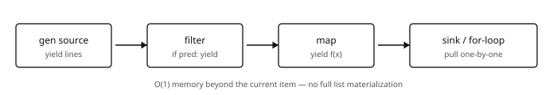
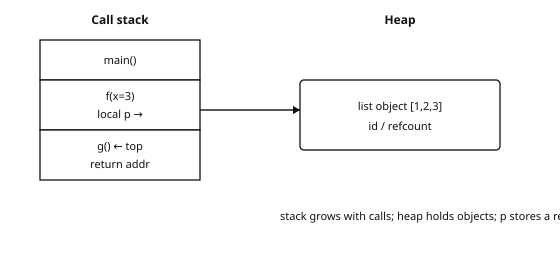
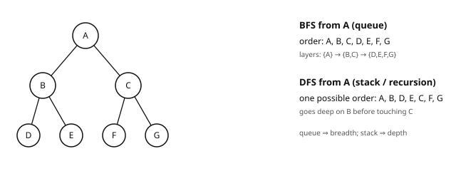
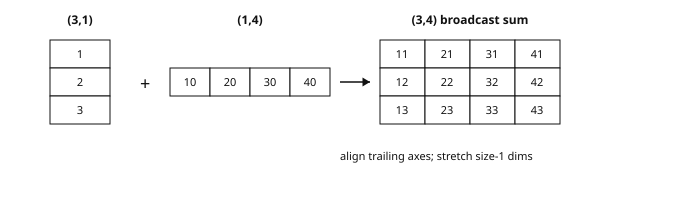

Refresher in Computer Science
CSC_51440_EP · Year 1 · Period 1
Introduction and overview
Independent study notes on the computing foundations used in the Graph × LLM reading route: scientific Python, algorithmic cost, graph representations and reproducible experiments. The catalog identity in the subtitle is a reference point, not a claim of institutional authorship, syllabus equivalence or enrolment advice.
The question this page answers: can you implement, measure and test the small computation before adding a learned model? Four predictions stored as (4,) minus four targets stored as (4,1) produce a (4,4) table, not four residuals. A BFS queue implemented with list.pop(0) can introduce quadratic work. Both failures can survive plausible-looking code.
Empirical first: time a loop against @, compare list and set membership, trace BFS on a toy graph — then explain the shapes, costs and correctness invariants.
Source labels and study budget
- Catalog-reported information: the SynapseS 2026–2027 sheet for
CSC_51440_EP, “Scientific courses — Refresher in computer science”, reports 12 h of lectures–tutorials (CTD). Total workload and ECTS are not displayed in the available sheet. “Not displayed” does not mean zero, and these notes do not supply an inferred credit value. - Suggested independent-work budget: allow approximately 36 h if you choose to work through the full page, code and exercises. This is an adjustable study estimate, not an official total, not additional catalog teaching time and not convertible here into ECTS. A selective refresher can be much shorter.
- Reading level and role: L3 refresherComputing foundations. These badges describe the reading role, not a verified administrative obligation. Catalog metadata, brochure/curriculum context and independent recommendations are separated in Sources and scope.
Audience: a technical reader already comfortable with basic Python variables, functions and loops, who wants more reliable data/ML code without restarting from a first programming course. Basic matrix notation is useful; the Refresher in Statistics is a complementary mathematical route. An undisclosed catalog prerequisite field is not evidence that no prior knowledge is needed.
What you will be able to check
- Write idiomatic Python for data: native structures, functions, exceptions, iterators and NumPy.
- Predict time and memory costs with big O notation, then check whether the measured bottleneck matches the model.
- Select arrays, linked structures, stacks, queues, hash tables, trees and heaps according to the dominant operations.
- Implement sorting, search and recursion, and reason about correctness by invariants and induction.
- Program graph traversals, shortest paths, connected components and spanning trees.
- Vectorize numerical computation with NumPy while controlling shapes, broadcasting, copies and precision.
- Structure a small, rerunnable project with tests, an environment record and version control.
Before you start
Spend 10–15 minutes on these positioning checks. They are routing aids, not a formal assessment. If all three are routine, go directly to the exit checkpoint and return only for a specific gap.
Cost and containers. You deduplicate n=10^5 distinct integer identifiers by testing membership in a growing list before appending. What is the total cost? What changes with a set? Would that change also make an explicitly stored all-pairs distance table linear in memory?
If uncertain: complexity and Python operation costs, §§2.2–2.4, then hash tables, §3.1.Shapes and shared memory. Let
X.shape == (4,3),w.shape == (3,)andy.shape == (4,1). Predict the shapes ofX @ wand(X @ w) - y; repair the unintended residual table. Explain why modifyingchunk = X[:2]can modifyX.
If uncertain: NumPy broadcasting, views and reductions, §§6.1–6.3. Check your understanding with exercise 12 in the exercise set.A graph you can trace. For
adj = {0: [1,2], 1: [0,2], 2: [0,1,3], 3: [2]}, give the BFS distances from 0, choose an appropriate queue, and justify the traversal cost. What changes if vertex 4 is added with no edges?
If uncertain: graph representations and traversals, §§5.1–5.2. Exercises 4–6 in the exercise set extend this check.
Positioning answers.
- The list version makes 0+1+\dots+(n-1)=n(n-1)/2 membership comparisons in this case — about 5\times10^9 at n=10^5. A set gives expected amortized \mathcal{O}(n) total work under ordinary hashing assumptions for these integer keys. An explicit table of all ordered pairs still contains n^2=10^{10} entries: changing a lookup structure does not remove an output-size lower bound.
X @ whas shape(4,); subtracting(4,1)broadcasts to(4,4). Use(X @ w)[:, None] - y, or consistently use one-dimensional targets with(X @ w) - y.ravel(). Basic slicing usually produces a view; use.copy()if the transformed chunk must not alter the source.- Distances are
{0: 0, 1: 1, 2: 1, 3: 2}. Usecollections.dequefor constant-time operations at both ends. With adjacency lists, BFS costs \mathcal{O}(|V|+|E|) over the graph, or the corresponding reachable subgraph for a single-source traversal. An isolated vertex is not reached from 0, but must appear as its own connected component.
Reading route
This is an Reading recommendation, not a course-selection plan. Select material by the checks above and by the computation you need next.
| Route | Read or practise | Evidence before moving on |
|---|---|---|
| Core: ML/DL computing readiness | Python, especially §§1.1, 1.3, 1.7, 1.9 and 1.11; costs, especially §§2.2–2.4; NumPy; the testing and reproducibility practices of chapter 7. Start with NumPy if Python itself is already familiar. | Predict shapes, compare a vectorized operation with a small reference implementation, and rerun an invariant test in a clean environment. |
| Core: Graph × LLM structural readiness | Structures, especially hashes and heaps; graphs, especially representations, BFS/DFS, topological sorting and shortest paths; sparse algebra, §6.7. | Trace a traversal, distinguish a workflow DAG from a data graph, and compare adjacency-list and sparse-matrix computations on the same toy graph. |
| Deepen when useful | The master theorem and amortized proofs in chapter 2; trees, tries and Bloom filters in chapter 3; sorting, selection and DP in chapter 4; flows, matching and communities in chapter 5. | Explain the relevant invariant or trade-off, then test an edge case rather than only memorizing a complexity class. |
| Optional extension | Geometric algorithms and research connections; advanced typing, the PyTorch class example and Docker where your project needs them. | Connect a geometric construction or software tool to an actual data or reproducibility problem. These are not universal prerequisites for language models. |
| Skip familiar material | If the checks pass, attempt the exit checkpoint immediately. Return through the local contents when a failure exposes a gap. | Keep a small working artifact; do not spend the full independent-work budget merely to complete every section. |
For active study:
- Type and modify the selected code. Snippets with unspecified inputs illustrate interfaces; provide a small fixture before treating them as a runnable experiment.
- Derive the cost from the representation and operations, then measure it. Record array shapes, dtype, hardware and numerical backend for timing comparisons.
- Apply pytest and version control to earlier chapters rather than postponing them until the end.
- For the graph branch, redo a BFS and a component test without looking at the solution.
- Use the Statistics refresher for mathematical gaps; the two refreshers need not be read cover to cover or in a fixed order.
independent note The site core is Graph × LLM: reliable numerical code and explicit graph structure support that investigation. They do not establish that a graph improves a language task. That decision still needs a feature/text-only baseline, an evaluation protocol and cases where adding structure does not help.
Contents
- Introduction and overview
- Before you start
- Reading route
- 1. Python for data science
- 2. Complexity analysis
- 3. Fundamental data structures
- 4. Sorting, search, recursion
- 5. Graph algorithms
- 6. NumPy: numerical linear algebra
- 7. Minimal software engineering (OOP, tests, git)
- 8. Geometric algorithms and research connections
- Exercises
- Exit checkpoint and connections
- Sources and scope
- References
1. Python for data science
Opening scale: on a matrix (n,d)=(10^5,512), a pure-Python loop for Xw can take seconds, while the same NumPy product can fall below ~100 ms on a suitable machine. These are illustrative orders, not portable benchmark results: dtype, BLAS, threads and hardware matter. The matrix alone occupies about 410 MB in float64.
Python is the implementation language used throughout these notes and much of the ecosystem: PyTorch, PyG, Hugging Face, POT, NetworkX and scikit-learn. Basics are assumed; this chapter consolidates the idioms needed to inspect and repair data pipelines.
What breaks if you skip this chapter without checking Loops instead of suitable vectorized operations (timeouts); a generator already consumed (“empty iterator”); hidden O(n^2) membership work inside a loop; no tests → silent regression in preprocessing. Vectorization can also cause OOM if it materializes an unnecessarily large intermediate.
1.1. Essential idioms
import math
tokens = "graphs link text text".split()
vocab = sorted(set(tokens))
# List / dict / set comprehensions
squares = [x**2 for x in range(10) if x % 2 == 0]
index = {token: i for i, token in enumerate(vocab)} # NLP vocabulary
uniques = {w.lower() for w in tokens}
# Higher-order functions, unpacking, lambda
def softmax(logits):
m = max(logits)
exps = [math.exp(z - m) for z in logits] # numerical stability
Z = sum(exps)
return [e / Z for e in exps]
first, *rest = [1, 2, 3, 4] # extended unpacking
key_fn = lambda kv: kv[1] # sort by value
# dataclasses: clean data objects
from dataclasses import dataclass
@dataclass
class Config:
lr: float = 1e-3
batch_size: int = 321.2. Decorators
A decorator is a function that takes a function and returns a function — syntactic sugar for wrapping a behavior. They appear throughout the ecosystem: PyTorch torch.no_grad, pytest @pytest.fixture, Flask routes and @functools.lru_cache. Understanding the mechanism makes framework code easier to read; writing custom decorators can wait until needed.
import functools, time
def timing(fn):
"""Measures and prints execution time — a small experiment tool."""
@functools.wraps(fn) # preserves fn's name/docstring
def wrapper(*args, **kwargs):
t0 = time.perf_counter()
out = fn(*args, **kwargs)
dt = (time.perf_counter() - t0) * 1e3
print(f"[{fn.__name__}] {dt:.2f} ms")
return out
return wrapper
@timing
# Equivalent to train_one_epoch = timing(train_one_epoch).
def train_one_epoch(model, loader):
...
# @property: accessor computed on the fly, access without parentheses
class Dataset:
def __init__(self, x, y):
self.x, self.y = x, y
@property
def n(self): # ds.n (not ds.n())
return len(self.x)
# Parameterized decorator (decorator factory): LRU memoization
@functools.lru_cache(maxsize=None) # keys = hashable arguments
def fib(n):
return n if n < 2 else fib(n-1) + fib(n-2)
# Exponential -> linear number of distinct Fibonacci subproblems:
# memoization turns the recurrence into dynamic programming (chapter 4).
# This counts arithmetic operations, not the bit cost of growing integers.1.3. Generators: the protocol and pipelines

A generator produces its values lazily: computation advances only when values are requested. A stateless element-by-element stage needs \mathcal{O}(1) auxiliary state, but the full pipeline must also account for buffers, current lines and token sizes. Streaming is a practical way to traverse corpora that do not fit in RAM — Wikipedia, Common Crawl or large logs — without materializing the whole corpus.
from itertools import islice
def stream_tokens(path):
"""Generator: yield suspends the function and preserves its state."""
with open(path, encoding="utf-8") as f:
for line in f:
yield from line.lower().split() # yield from: sub-iterator
def up_to(it, n):
for x in islice(it, n): # no extra item consumed
yield x
# Pipeline: each step is a generator, data flows element by element
tokens = up_to(stream_tokens("corpus.txt"), 1_000_000)
long_words = (t for t in tokens if len(t) >= 6) # generator expression
first100 = list(zip(range(100), long_words))
# Full protocol: next() / send / close; in practice one usually loops:
# for tok in stream_tokens(path): ...Generator ≠ list: the exhaustion trap A generator is consumed only once: after a complete loop, it is exhausted. For two passes, either materialize (list(gen)) or create a fresh generator. len() and indexing also fail on a generator. A dedicated iterable can provide fresh iterations, but an iterable-style PyTorch dataset does not automatically gain a known length or random access.
1.4. Context managers
# with: guarantee release of a resource (file, session, numerical state)
with open("out.txt", "w") as f: # closes even on exception
f.write("done")
# The protocol: __enter__ / __exit__
import contextlib, numpy as np
from copy import deepcopy
@contextlib.contextmanager
def seed_context(rng, seed):
"""Temporarily reseed a NumPy Generator, then restore its state."""
state = deepcopy(rng.bit_generator.state)
try:
rng.bit_generator.state = type(rng.bit_generator)(seed).state
yield rng
finally:
rng.bit_generator.state = state
rng = np.random.default_rng(0)
with seed_context(rng, 42) as local_rng:
samples = local_rng.normal(size=3)
# The original generator state has now been restored.
# Do not share this temporarily mutated generator across concurrent tasks.
# Standard numerical usage: local error-handling policy
with np.errstate(divide="ignore"):
z = np.log(np.array([0.0])) # -inf, but no divide warning1.5. Typing: Generic and Protocol
from typing import Generic, TypeVar, Protocol, Iterator
T = TypeVar("T")
class Stack(Generic[T]): # typed stack: Stack[int], Stack[str]
def __init__(self) -> None:
self._items: list[T] = []
def push(self, x: T) -> None:
self._items.append(x)
def pop(self) -> T:
return self._items.pop()
class SupportsFit(Protocol): # structural typing (duck typing)
def fit(self, x: np.ndarray, y: np.ndarray) -> "SupportsFit": ...
def predict(self, x: np.ndarray) -> np.ndarray: ...
def train_and_score(model: SupportsFit, x, y) -> float:
"""Accepts a classifier with fit/predict, without common inheritance:
an sklearn classifier OR a homemade model — duck typing."""
model.fit(x, y)
return float((model.predict(x) == y).mean())This last function reports training accuracy, useful as an interface smoke test. It is not an evaluation protocol: held-out data, splits and model selection belong in the Machine Learning notes.
Why type in Python? Ordinary annotations are not checked at runtime; tools such as pydantic or beartype can add selected runtime validation. Annotations nevertheless (i) document contracts; (ii) improve completion and refactoring; and (iii) let mypy/pyright catch some bugs before execution — valuable when a failure at the 40th epoch would waste a long run. Framework interfaces in PyTorch and PyG are useful places to practise reading types.
1.6. Advanced dataclasses
from dataclasses import dataclass, field
@dataclass(frozen=True, slots=True) # frozen fields + less per-object overhead
class HP:
lr: float = 1e-3
weight_decay: float = 0.0
tags: tuple[str, ...] = () # immutable, hashable configuration field
metrics: dict[str, float] = field(
default_factory=dict, compare=False, hash=False
) # each instance gets its own dictionary
h = HP(lr=3e-4)
# h.lr = 0.1 -> FrozenInstanceError
# hash(h) works: metrics is excluded from equality and hashing.
# But h.metrics["loss"] = 0.2 is still possible: frozen is not deep immutability.For larger experiments, separating immutable configuration from mutable results is often clearer. default_factory avoids a shared mutable default; it does not make the resulting object immutable.
1.7. itertools and collections: the toolbox
from collections import Counter, defaultdict, deque
from itertools import chain, islice, product, groupby
# Counter: NLP counting in one line
words = "the cat the dog the cat".split()
c = Counter(words) # {'the': 3, 'cat': 2, 'dog': 1}
c.most_common(2) # [('the', 3), ('cat', 2)]
# After counting, top-k over v distinct keys typically costs O(v log k).
# defaultdict: no more KeyError; typical: adjacency, inverted index
# edges, X, y_all, losses and run_experiment are pipeline inputs below.
adj = defaultdict(list)
for u, v in edges:
adj[u].append(v) # graph (chapter 5)
by_label = defaultdict(list)
for x, y in zip(X, y_all):
by_label[y].append(x) # partition by class
# deque: O(1) queue at both ends (BFS, sliding window)
window = deque(maxlen=100)
for t, loss in enumerate(losses):
window.append(loss) # automatically evicts the oldest
# itertools: chain (lazy concat), islice (slice an iterator),
# product (hyperparameter grid), groupby (consecutive equal-key groups)
for lr, wd in product([1e-3, 3e-4], [0.0, 1e-2]):
run_experiment(HP(lr=lr, weight_decay=wd))groupby groups consecutive equal keys. Sort by the grouping key first if the intended groups are not already contiguous.
1.8. Memory and cost of objects

The schema is a conceptual reference model: Python variables refer to objects, and assigning another name does not copy the object. Exact frame layouts and object sizes depend on the implementation and version.
import sys
# Illustrative sizes on a typical 64-bit CPython build: measure yours.
sys.getsizeof([]) # ~56 bytes: an empty list is not free
sys.getsizeof([0]) # ~64 bytes; a list grown by append may use ~88
sys.getsizeof("token") # ~54 bytes: the string carries a header
sys.getsizeof(2**100) # ~40 bytes: arbitrary-precision integer
# 1 million small ints in a Python list vs a NumPy array:
py_list = list(range(1_000_000)) # roughly 36–40 MB: pointers + int objects
np_arr = np.arange(1_000_000, dtype=np.int64) # ~8 MB contiguous data
# sys.getsizeof(py_list) alone does NOT include all referenced integer objects.
# Numerical computing benefits from contiguous buffers (BLAS, GPU, etc.).1.9. Profiling: measure before optimizing
# timeit: isolated micro-benchmarks (normally disables GC, repeats measurements)
python -m timeit -s "import numpy as np; A = np.random.rand(600,600); x = np.random.rand(600)" \
"A @ x"
# A result around 1 ms per call is an illustrative scale, not a guarantee.
# cProfile: where does the time go in a full program?
python -m cProfile -s cumtime train.py
# Example of the kind of report to inspect:
# ncalls cumtime function
# 200 120.3s train.py:epoch
# 50000 90.1s dataloader.py:__next__ <- investigate data loading
# Line-by-line profiling: line_profiler (kernprof -l -v train.py)Measurement reflex A slow pipeline often has a dominant bottleneck: data loading, CPU–GPU transfers, or a Python loop around a vectorized primitive. A short cProfile run can locate it; intuition is regularly wrong. Profile first, optimize next, then benchmark the same workload to demonstrate the gain. GPU timing additionally needs synchronization or device-aware profiling.
1.10. Environments: venv, uv, poetry
Project practice: one virtual environment per project. Record dependency versions and keep the environment setup alongside the experiment. A pip freeze snapshot records installed packages; a resolver lockfile can additionally describe how a project’s dependencies were resolved.
# venv + pip (standard Python tooling)
python -m venv .venv && source .venv/bin/activate
pip install -r requirements.txt && pip freeze > requirements.lock
# uv: environments and dependencies in one tool
uv venv && uv pip install -r pyproject.toml
uv add torch --upgrade
# poetry: pyproject.toml + poetry.lock
poetry install # installs from the existing lockfileThese are alternative workflows, not commands to mix indiscriminately. Version locks help reproducibility but do not fix hardware, numerical backends or all sources of nondeterminism.
1.11. Testing with pytest
# test_softmax.py — small, executable invariants
import pytest, math
import numpy as np
def softmax(v):
m = max(v)
e = [math.exp(x - m) for x in v]
Z = sum(e)
return [x / Z for x in e]
def test_softmax_sums_to_one():
out = softmax([1.0, 2.0, 3.0])
assert abs(sum(out) - 1.0) < 1e-12 # fundamental invariant
def test_softmax_stable_under_shift():
# Translation invariance: the property that justifies subtracting max.
assert np.allclose(softmax([1000.0, 1001.0]), softmax([0.0, 1.0]))
def test_softmax_empty_raises():
with pytest.raises(ValueError):
softmax([])
@pytest.mark.parametrize("n", [1, 5, 100]) # same test, 3 sizes
def test_softmax_output_length(n):
assert len(softmax(list(range(n)))) == n
@pytest.fixture # reusable, isolated data
def toy_dataset():
rng = np.random.default_rng(0)
return rng.normal(size=(50, 3)), rng.integers(0, 2, 50)
@pytest.mark.skip(reason="Enable after supplying a suitable model fixture.")
def test_model_overfits_toy(model, toy_dataset):
# Optional model-specific diagnostic: fit/score are an assumed interface.
X, y = toy_dataset
model.fit(X, y, epochs=500)
assert model.score(X, y) > 0.95The last test is deliberately disabled until a compatible model fixture exists. Its labels are random: fitting them requires enough capacity to memorize the sample. Failure is not automatically an implementation bug, and this is not a reasonable universal requirement for an affine classifier. Even successful memorization says nothing about generalization.
Vectorization In scientific Python, use a vectorized operation when it expresses the intended computation without an excessive intermediate. np.dot(A, x) can be ~100× faster than Python loops because it delegates to compiled numerical code. Check equality against a small reference before comparing speed.
Key takeaways — chapter 1
- Decorators wrap functions (
wrapspreserves metadata); generators are lazy and single-use, with memory determined by their state and buffers. defaultdict/Countersupport text and graph pipelines; frozen dataclasses help with configuration but do not imply deep immutability.Genericdescribes containers;Protocoldescribes structural interfaces.- Profile before optimizing (
cProfile,timeit); use one environment per project; test fixtures, parametrized cases and invariants.
2. Complexity analysis
Before formal notation, compare scales. At n=10^6, a quadratic enumeration has 10^{12} pairs; a logarithmic search needs only about 20 steps. Constants matter, but they do not make these growth rates interchangeable.
| Complexity | Canonical example | Order of magnitude at n = 10^6 |
|---|---|---|
| \mathcal{O}(\log n) | binary search | ~20 operations |
| \mathcal{O}(n) | list traversal; BFS/DFS on a bounded-degree gra | ph 10⁶ |
| \mathcal{O}(n \log n) | merge sort, heap sort | ~2·10⁷ |
| \mathcal{O}(n^2) | double loop, dense all-pairs table | 10¹² — already very large |
| \mathcal{O}(n^3) | naive square matrix product, dense elimination | 10¹⁸ |
Example 2.0b — Concrete timing scales to test in CPython For n=10^5 ordinary integers, the following are illustrative scales, not measurements established for every machine:
| Structure / op | Illustrative scale / cost |
|---|---|
x in list (miss, scan) |
sub-ms to a few ms — \Theta(n) |
x in set (miss) |
sub-microseconds to microseconds — expected \Theta(1) |
deque.append / popleft |
often sub-microsecond — \Theta(1) |
list.insert(0, x) |
tens to hundreds of microseconds — \Theta(n) shifts |
| sort n=10^5 random integers | often ~10–30 ms — \Theta(n\log n) comparisons |
Numbers move with hardware, implementation and object type. The structural comparison — scanning a list versus hashing, shifting an array versus using a deque — is the lesson. Measure with timeit before rewriting a hot loop.
Definition 2.1 — \mathcal{O} notation For eventually nonnegative cost functions, f(n) = \mathcal{O}(g(n)) if there exist C > 0 and n_0 such that f(n) \leq C\,g(n) for all n \geq n_0. One writes \Theta(g) if f is both \mathcal{O}(g) and \Omega(g): upper and lower bounds up to constants.
Complexity is measured in time and memory, in the worst case unless another regime is stated. Keep the parameters visible: graph costs depend on both |V| and |E|; an n\times d matrix computation depends on both n and d.
2.1. Master theorem
Theorem 2.2 — Master theorem (polynomial-work form) For a divide-and-conquer recurrence with a constant-cost base case,
T(n) = a\,T(n/b) + \Theta(n^d), \qquad a \geq 1,\; b > 1,\; d \geq 0,
write c^\star = \log_b a for the critical threshold:
- if d > c^\star: the work at the root dominates, T(n) = \Theta(n^d);
- if d = c^\star: each level costs as much, T(n) = \Theta(n^d \log n);
- if d < c^\star: the leaves dominate, T(n) = \Theta(n^{\log_b a}).
Intuition: the recursion tree has \log_b n levels; the cost at level k is
a^k \cdot \Theta((n/b^k)^d) = \Theta\big(n^d(a/b^d)^k\big),
a geometric sequence that increases, stays constant or decreases. The \Theta(n^d) assumption matters: an upper bound alone does not generally establish the matching lower bound.
Example 2.3 — Four immediate applications
| Recurrence | Algorithm / construction | Case | Result |
|---|---|---|---|
| T(n) = 2T(n/2) + \Theta(n) | merge sort | d = c^\star = 1 | \Theta(n \log n) |
| T(n) = T(n/2) + \Theta(1) | binary search | d = 0 = c^\star | \Theta(\log n) |
| T(n) = 2T(n/2) + \Theta(n^2) | two subproblems, quadratic combine step | d = 2 > 1 | \Theta(n^2) |
| T(n) = 3T(n/2) + \Theta(n) | Karatsuba multiplication of big integers | 1 < \log_2 3 \approx 1.58 | \Theta(n^{\log_2 3}) |
For binary search: a=1, b=2, d=0, so c^\star=0=d — each of the \log_2 n levels costs \Theta(1).
The third row is a toy recurrence, not the ordinary block matrix product: that product uses 8T(n/2)+\Theta(n^2) and has cubic cost. Karatsuba shows the value of reducing the number of recursive multiplications from 4 to 3. Strassen applies a related idea to matrices, using 7 block products and giving \mathcal{O}(n^{\log_2 7})\approx\mathcal{O}(n^{2.81}). This is an algorithmic connection, not a claimed requirement of another module.
2.2. Amortized analysis: the dynamic array
Theorem 2.4 — append is amortized \mathcal{O}(1) A dynamic array doubles its capacity when full. A sequence of n consecutive appends from an empty array then costs \mathcal{O}(n) in total: constant amortized cost per operation, despite occasional reallocations costing \mathcal{O}(n).
Proof. By direct summation. Elementary insertions cost n writes. Copies during successive doublings have total cost bounded by
1+2+4+\dots+2^k = 2^{k+1}-1 \leq 2n,
where 2^k\leq n. Thus total work is at most n+2n=3n=\mathcal{O}(n).
By the potential method. For the doubling model, set
\Phi(\text{state})=2\times(\text{size})-(\text{capacity}),
with \Phi(\text{empty})=0. After initialization the array is at least half full, so the potential is nonnegative. An ordinary append costs 1 and increases \Phi by 2: amortized cost 3. If a full array of capacity C grows to 2C, copying and inserting cost C+1, while the potential changes from C to 2. The amortized cost is again (C+1)+(2-C)=3. Stored potential pays for the occasional expensive resize.
The same formalism handles examples such as multi-pop stacks and binary-counter increments, where counting each operation in isolation is misleading. ∎
“Amortized” ≠ “average” Amortized analysis bounds the sum over a sequence of operations without requiring a random input model. Average-case or expected analysis does use a probabilistic model — for example, random pivots or hashing assumptions. Hash-table insertion can involve both: expected lookup behavior and amortized resizing.
2.3. Memory complexity and real Python operations
| Operation | Complexity | Note |
|---|---|---|
lst[i], lst.append(x) |
\mathcal{O}(1) / amortized \mathcal{O}(1) | dynamic array (theorem 2.4) |
x in lst |
\mathcal{O}(n) | linear scan — a common nested-loop pitfall |
d[k], s.add(x), x in d |
expected \mathcal{O}(1), amortized for insertio | n hash table; bounded-cost hashing assumed |
lst.insert(0, x), lst.pop(0) |
\mathcal{O}(n) | shifts elements — use deque |
heapq.heappush / heappop |
\mathcal{O}(\log n) | binary heap (section 3.3) |
sorted(lst) / lst.sort() |
\mathcal{O}(n \log n) | Timsort worst case; stable and adaptive |
a + b (list, str) |
\mathcal{O}(|a|+|b|) | new allocation — consider extend / join |
Example 2.5 — Two nested loops, and a different quadratic pitfall
def all_pairs_dist(V, E):
d = {}
for u in V: # n iterations
for v in V: # n iterations -> O(n^2) pairs
d[u, v] = dist(u, v)
return d
# dist is a supplied distance function; E is not used by this enumeration.On a graph with 10^5 nodes, this stores 10^{10} pairs. Even a compact float64 array would require 80 GB for the values alone; a Python dictionary would require much more. If dist itself costs \Theta(d), time becomes \Theta(n^2d).
Node embeddings can avoid storing an all-pairs table by assigning a d-dimensional vector to each node, using \Theta(nd) storage. They are task-dependent representations, not automatically exact replacements for every graph distance. A later all-pairs score computation can still reintroduce quadratic cost.
A different common rewrite replaces x in lst inside a single scan with x in seen_set: this can reduce a deduplication loop from \mathcal{O}(n^2) to expected \mathcal{O}(n). It does not make the explicit all-pairs output above linear.
2.4. Memory: space complexity
Counting memory follows the same rules:
- dense adjacency: \Theta(|V|^2); adjacency lists: \Theta(|V|+|E|);
- an m\times n DP table may reduce to two rows — \mathcal{O}(\min(m,n)) storage for Levenshtein distance, section 4.6;
- recursion uses a call stack of depth \Theta(\text{depth}). Recursive DFS on a path of 10^6 nodes exceeds Python’s usual recursion limit of roughly 1000. An iterative traversal is safer than simply increasing the limit with
sys.setrecursionlimit.
In deep learning, activations often contain a term of size \Theta(\text{batch}\times\text{length}\times\text{dims}). Materialized attention scores add a quadratic length term, typically \Theta(\text{batch}\times\text{heads}\times\text{length}^2). Neither expression alone includes all parameters, optimizer state or saved intermediate tensors.
2.5. P vs NP: limits of exact computation
Informal statement P consists of decision problems solvable in polynomial time, \mathcal{O}(n^k). NP consists of decision problems whose “yes” answers have polynomial-size certificates verifiable in polynomial time. NP-complete problems belong to NP and are at least as hard as every problem in NP under polynomial-time reductions. If one NP-complete problem is in P, then P=NP.
The conjecture P\neq NP remains open. An NP-hard optimization problem does not force us to abandon exact solutions: small instances, special structure, branch-and-bound or parameterized algorithms may be effective. At larger scales, approximations, heuristics and learned proposals are options whose guarantees and failure modes must be stated.
Example 2.6 — A reduction: from Hamiltonian cycle to TSP TSP (traveling salesman, decision version): “Does there exist a tour of length \leq B?”
Given an undirected graph G with n vertices, build a complete TSP instance where d(u,v)=1 if (u,v)\in E and d(u,v)=2 otherwise, with budget B=n. A tour has n edges, each of weight at least 1. Therefore a tour of cost \leq n uses only weight-1 edges: it is a Hamiltonian cycle in G. Conversely, a Hamiltonian cycle gives a TSP tour of cost n.
The transformation is polynomial. A polynomial-time algorithm for this TSP decision problem would therefore solve Hamiltonian cycle in polynomial time: TSP is at least as hard. This encoding pattern is the grammar of NP-hardness proofs. Section 5.5 supplies a contrasting constructive result — a factor-2 approximation for metric TSP using a spanning tree.
Key takeaways — chapter 2
- Master theorem: compare d with \log_b a; root, equal-level or leaf work dominates.
- Dynamic-array append is amortized \mathcal{O}(1); amortized and expected costs are different notions.
in listis linear;in setis expected constant time under hashing assumptions. Include key-processing costs where relevant.- Keep all size parameters visible, and distinguish working memory from an unavoidable output-size cost.
- NP-hardness motivates careful algorithm selection; it does not prohibit every useful exact computation.
3. Fundamental data structures
| Structure | Access / search | Insertion | Typical ML use |
|---|---|---|---|
| array (Python list) | \mathcal{O}(1) by index | \mathcal{O}(n) at an arbitrary position; appe | nd amortized \mathcal{O}(1) batches, token sequences |
| hash table (dict/set) | expected \mathcal{O}(1) | expected amortized \mathcal{O}(1) | vocabulary, deduplication, cache |
| stack (LIFO) | top \mathcal{O}(1) | \mathcal{O}(1) abstractly; amortized with a l | ist DFS, backtracking |
| queue (FIFO, deque) | head \mathcal{O}(1) | \mathcal{O}(1) | BFS, data pipelines |
| binary heap (heapq) | min \mathcal{O}(1) | \mathcal{O}(\log n) | top-k, Dijkstra, beam search |
| balanced binary search tree | \mathcal{O}(\log n) | \mathcal{O}(\log n) | ordered indexes |
| trie (prefix tree) | \mathcal{O}(L) per word | \mathcal{O}(L) | autocompletion, prefix constraints |
3.1. Hash tables: under the hood of dict and set
Definition 3.1 — Hash table A hash table uses an array of m buckets; a key k is initially mapped to index h(k)\bmod m. Under suitable hashing and bounded load, lookup has expected \mathcal{O}(1) cost. The worst case is \mathcal{O}(n) when many keys collide. These bounds exclude any nonconstant cost of computing or comparing the keys themselves.
Collisions: two strategies
- Chaining: each bucket contains a small collection of entries; colliding keys accumulate there. Simple, but pointer traversal can be cache-unfriendly.
- Open addressing: on collision, probe other slots. CPython uses a variant of this strategy. Its index/entry storage is compact, but referenced Python objects still live separately.
- Load factor \alpha=n/m: CPython dictionaries resize around a usable load of 2/3, an implementation detail rather than a language guarantee. Resizing gives the amortized part of expected amortized insertion cost.
- Key contract: equality-compatible hashes must stay stable while a key is stored. Lists and dictionaries are unhashable; tuples of hashable objects and
frozensets can be keys. Custom mutable objects can sometimes be identity-hashed, so “all mutable objects are forbidden” is too broad. - Python may randomize hashes between processes. Do not use a process-specific hash as a persistent identifier.
Example 3.2 — NLP vocabulary in one pass
vocab = {} # token -> id
def tokenize_id(text):
out = []
for tok in text.lower().split():
if tok not in vocab: # expected O(1) table lookup
vocab[tok] = len(vocab) # next free id
out.append(vocab[tok])
return out
# 10^9 tokens, vocabulary size 10^5:
# expected O(n) token-level work rather than O(n * vocabulary_size)
# for a list scan, with token hashing/processing costs accounted for separately.
# The same principle indexes graph entities or (user, item) pairs.For an evaluation pipeline, build the vocabulary on the allowed training data and define how unknown tokens are handled. Efficient indexing alone does not prevent leakage.
3.2. Balanced trees: AVL and red-black
Sketch A binary search tree stores keys in order: left < root < right. A search or update takes time proportional to the traversed height: logarithmic when balanced, linear when the tree degenerates into a chain.
Self-balancing trees maintain \mathcal{O}(\log n) height through rotations, local rearrangements preserving key order. AVL trees keep child heights within 1; red-black trees guarantee height at most 2\log_2(n+1). C++ ordered maps commonly use red-black trees; disk-oriented database indexes more often use multiway B/B+ trees.
In Python, a dict is usually the first choice for unordered lookup. Choose an ordered structure when predecessor/successor queries, ordered ranges or indexed aggregation require one. Balanced search-tree invariants should not be assumed for arbitrary clustering hierarchies.
3.3. Binary heap: heapify is linear
Theorem 3.3 — Construction in \mathcal{O}(n) A binary min-heap — an array where each parent is no greater than its children — can be built from an arbitrary array in \Theta(n) time, not \Theta(n\log n).
Proof. Bottom-up construction sifts down each internal node. A node of height h costs \mathcal{O}(h), and there are at most \lceil n/2^{h+1}\rceil nodes at that height. Thus
\sum_{h=0}^{\lfloor\log_2 n\rfloor} \left\lceil\frac{n}{2^{h+1}}\right\rceil\mathcal{O}(h) = \mathcal{O}\left(n\sum_{h\geq0}\frac{h}{2^h}+\log^2 n\right) = \mathcal{O}(n),
using \sum_{h\geq0}h/2^h=2, obtained by differentiating a geometric series. About half the nodes are leaves with zero sift-down cost; about a quarter have height 1. Most nodes are near the cheap bottom of the heap. Inspecting the input supplies the matching linear lower bound. ∎
Example 3.4 — Top-k with a heap
import heapq
def top_k(items, scores, k):
"""Return (score, item) pairs for the k highest scores.
O(n log k) for k >= 2; items must be comparable when scores tie.
"""
if k <= 0:
return []
heap = [] # min-heap of size <= k
for it, s in zip(items, scores):
if len(heap) < k:
heapq.heappush(heap, (s, it))
elif s > heap[0][0]:
heapq.heapreplace(heap, (s, it)) # evicts the smallest
return sorted(heap, reverse=True)
# NLP connection: select the k highest-scoring tokens before top-k sampling.
# heapq.nlargest(k, zip(scores, items)) packages this selection pattern.
# It does not require an earlier heapify call.
# Alternatively: heapify all n items, then extract k times -> O(n + k log n).For general objects that cannot be ordered, include an integer tie-breaker in heap entries. Selection is also only one step of top-k sampling: probabilities must subsequently be restricted and renormalized.
3.4. Tries: prefix search
Definition 3.5 — Trie (prefix tree) A trie stores characters on edges; each node represents a shared prefix. Inserting or searching a word of length L takes \Theta(L) character steps, independent of the number of stored words. With dictionary-backed children, this uses expected constant-time character lookup.
By comparison, a balanced tree or binary search over a sorted array uses \mathcal{O}(\log n) string comparisons, each potentially costing \mathcal{O}(L): up to \mathcal{O}(L\log n) character work. Prefix completion additionally pays for the subtree visited and the output produced.
class TrieNode:
__slots__ = ("children", "is_word")
def __init__(self):
self.children = {} # char -> TrieNode (hash table)
self.is_word = False
class Trie:
def __init__(self):
self.root = TrieNode()
def insert(self, word):
node = self.root
for ch in word:
if ch not in node.children:
node.children[ch] = TrieNode()
node = node.children[ch]
node.is_word = True
def search(self, word):
node = self._walk(word)
return node is not None and node.is_word
def starts_with(self, prefix): # autocompletion
return self._walk(prefix) is not None
def completions(self, prefix, limit=10):
node = self._walk(prefix)
out, stack = [], [(node, prefix)] if node else []
while stack and len(out) < limit: # lexicographic DFS
n, s = stack.pop()
if n.is_word:
out.append(s)
stack.extend(
(child, s + ch)
for ch, child in sorted(n.children.items(), reverse=True)
)
return out
def _walk(self, s):
node = self.root
for ch in s:
node = node.children.get(ch)
if node is None:
return None
return node
t = Trie()
for w in ["graph", "graphs", "grain", "gradient"]:
t.insert(w)
assert t.starts_with("grad") and not t.starts_with("grapx")
print(t.completions("gra")) # ['gradient', 'grain', 'graph', 'graphs']Tries and NLP Uses include autocompletion, large lexicons with shared prefixes, tokenization lookup and prefix-constrained decoding. Some subword implementations use trie-like structures; this is not a universal description of BPE tokenizers. Compressed tries, or radix trees, also support IP routing.
3.5. Two heaps: the median of a stream
The median online Receive numbers one by one and query the median at any time. Maintain a max-heap L for the lower half and a min-heap U for the upper half, with
|L|-|U|\in\{0,1\}, \qquad \max L\leq\min U
when both heaps are nonempty. Insertion costs \mathcal{O}(\log n): place the new value, then rebalance by moving one root if needed. Median lookup costs \mathcal{O}(1): the root of L, or the average of both roots for an even count.
This supports robust stream summaries and one-dimensional median-based centers. Exact medians retain \Theta(n) stored values; a bounded-memory quantile sketch solves a different, approximate problem.
3.6. Bloom filters
Definition 3.6 — Bloom filter A Bloom filter uses an array of m bits and k hash functions. Inserting x sets bits h_1(x),\dots,h_k(x) to 1. A query answers “possibly present” if all those bits are 1, and “absent” otherwise.
An “absent” answer is certain under the insertion-only model and consistent hashing. A positive answer can be false. Storage is \mathcal{O}(m) bits, independent of key lengths, but false positives increase with the number of inserted keys.
Proof. False positive rate. Under independent uniform hashing, after n insertions the probability that a bit remains 0 is
(1-1/m)^{kn}\approx e^{-kn/m}.
Approximating the queried bits as independent gives
p\approx\big(1-e^{-kn/m}\big)^k.
For a fixed ratio m/n, differentiation gives the optimum
k^\star=\frac{m}{n}\ln 2, \qquad p^\star\approx(0.6185)^{m/n}.
The error rate therefore decreases exponentially with bits per inserted element. With 10 bits per element and k=7, p\approx0.008. This is an application of the probability calculations reviewed in the Statistics refresher, with independence treated as an approximation rather than an exact property of every implementation. ∎
Example 3.7 — Crawling deduplication
import hashlib
class Bloom:
def __init__(self, m_bits, k):
if m_bits <= 0 or k <= 0:
raise ValueError("m_bits and k must be positive")
self.m, self.k = m_bits, k
self.bits = bytearray((m_bits + 7) // 8)
def _pos(self, x, i):
h = hashlib.sha256(f"{i}:{x}".encode()).digest()
return int.from_bytes(h[:8], "big") % self.m
def add(self, x):
for i in range(self.k):
p = self._pos(x, i)
self.bits[p // 8] |= 1 << (p % 8)
def might_contain(self, x):
return all(
self.bits[p // 8] & (1 << (p % 8))
for p in (self._pos(x, i) for i in range(self.k))
)
b = Bloom(m_bits=8_000_000, k=7) # ~1 MB
# At 1M inserted URLs: 8 bits/element, p ~ 0.023.
# For ~0.008 at 1M URLs, use about 10M bits (~1.25 MB) and k=7.
b.add("https://polytechnique.edu")
assert b.might_contain("https://polytechnique.edu")
# Uses: crawler prefilter, negative disk cache, candidate join filtering.
# Verify positive answers exactly when a false positive would lose needed data.Sparse representation versus probabilistic compression A dense co-occurrence matrix for a vocabulary of 100k words has 10^5\times10^5 entries — 80 GB in float64. Real co-occurrence matrices are often sparse, motivating scipy.sparse or dictionaries. A Bloom filter is a different memory trade-off: it stores an approximate membership summary rather than an exact sparse matrix. Both require an explicit account of what information is preserved or lost.
Key takeaways — chapter 3
- Hash tables combine collision handling, load control and resizing; expected amortized \mathcal{O}(1) assumes suitable hashing and bounded key-processing cost.
heapifyis linear; streaming top-k selection uses \mathcal{O}(k) storage and \mathcal{O}(n\log k) work for k\geq2.- Trie lookup takes \Theta(L) character steps; completion also pays for the visited subtree and output.
- Bloom filters have no false negatives in the insertion-only model, but positive answers need verification when correctness requires it. Their approximate false positive rate is (1-e^{-kn/m})^k.
4. Sorting, search, recursion
4.1. Quicksort: in-place partition and analysis
def quicksort(a, lo=0, hi=None):
if hi is None:
hi = len(a) - 1
if lo >= hi:
return a
p = partition(a, lo, hi) # pivot in its final position
quicksort(a, lo, p - 1) # everything left < pivot
quicksort(a, p + 1, hi) # everything right >= pivot
return a
def partition(a, lo, hi):
"""Lomuto partition: pivot = a[hi], in place, O(hi-lo)."""
pivot, i = a[hi], lo
for j in range(lo, hi):
if a[j] < pivot: # maintain the invariant:
a[i], a[j] = a[j], a[i] # a[lo..i-1] < pivot
i += 1 # a[i..j-1] >= pivot
a[i], a[hi] = a[hi], a[i] # place the pivot between the two
return iProposition 4.1 — Expected \Theta(n\log n), worst-case \Theta(n^2) In the worst case, the pivot is always extreme — for example, a sorted array with the last element chosen as pivot:
T(n)=T(n-1)+\Theta(n)=\Theta(n^2).
For distinct keys and a uniformly random pivot rank, the expected comparison count satisfies
T(n)=n-1+\frac1n\sum_{k=0}^{n-1}\big(T(k)+T(n-1-k)\big).
Multiplying by n and subtracting the equation at n-1 gives
\frac{T(n)}{n+1} = \frac{T(n-1)}{n} + \frac{2(n-1)}{n(n+1)}.
Telescoping yields
T(n)=2(n+1)H_n-4n \approx1.39\,n\log_2 n
in the leading term, where H_n is the n-th harmonic number. Compare this with the n\log_2 n leading comparison count for merge sort and the information-theoretic lower bound \log_2 n!\approx n\log_2 n-1.44n. These are comparison counts, not direct wall-clock predictions.
The fixed-pivot code above has this average behavior under a random-permutation input model; it does not randomize its pivot itself.
Mitigating the worst case (i) Random pivot: gives expected \mathcal{O}(n\log n) for distinct keys regardless of their initial order. (ii) Median of three (lo/middle/hi): a practical heuristic, not a worst-case guarantee. (iii) Introsort: switches from quicksort to heapsort when recursion becomes too deep, commonly around 2\log_2 n, guaranteeing \mathcal{O}(n\log n).
Repeated equal keys need attention too: the two-way partition above degenerates on an all-equal array, even with random pivots. A three-way partition handles equal keys explicitly. Python uses stable, adaptive Timsort, which can be linear on already ordered runs.
4.2. Merge sort and counting inversions
Proposition 4.2 — Mergesort Split in the middle, sort each half, then merge in \Theta(n). The recurrence 2T(n/2)+\Theta(n) gives guaranteed \Theta(n\log n) time.
A stable merge preserves the relative order of equal keys. This supports multi-key sorting: sort by a secondary key such as score, then stably sort by a primary key such as date; within each date, score order remains intact. Auxiliary memory is \Theta(n).
Example 4.3 — Counting inversions in \Theta(n\log n) An inversion is a pair (i,j) with i<j and a_i>a_j. It measures disorder and underlies Kendall-style comparisons of rankings. Brute force counts in \mathcal{O}(n^2); an instrumented merge sort does better:
def count_inversions(a):
if len(a) <= 1:
return a, 0
mid = len(a) // 2
left, cl = count_inversions(a[:mid])
right, cr = count_inversions(a[mid:])
merged, cross = [], 0
i = j = 0
while i < len(left) and j < len(right):
if left[i] <= right[j]:
merged.append(left[i]); i += 1
else: # left[i] > right[j]
merged.append(right[j]); j += 1
cross += len(left) - i # all remaining left items form inversions
return merged + left[i:] + right[j:], cl + cr + cross
count_inversions([5, 4, 3, 2, 1]) # -> ([1,2,3,4,5], 10), with 10 = C(5,2)Each right element moved ahead of the remaining left elements counts exactly those cross-block inversions. Recursive calls count the within-block inversions.
4.3. Radix sort: sorting without comparing
Proposition 4.4 — Radix sort (LSD) For n integers of k digits in base b, perform k stable digit-sorting passes, each costing \Theta(n+b):
T=\Theta\big(k(n+b)\big)\approx\Theta(nk)
when b is fixed or small relative to n. The comparison-sort lower bound \Omega(n\log n) does not apply: the algorithm examines digit values rather than only comparing whole keys.
For 64-bit keys processed byte by byte, k=8 and b=256: linear work in n. Uses include token identifiers and encoded network addresses. Costs include \Theta(n+b) auxiliary memory and increased work for longer keys. Floating-point values require an order-preserving encoding; they are not handled correctly by arbitrary raw-byte order.
4.4. Selection: the median in expected \Theta(n)
Proposition 4.5 — Quickselect To find the k-th smallest element, partition as in quicksort but recurse only into the side containing rank k. With uniformly random pivots on distinct keys, the retained subproblem shrinks by a constant fraction in expectation — bounding it by the larger side gives about 3n/4, not necessarily n/2. The expected work sums geometrically, yielding \Theta(n).
This supports medians and quantiles without fully sorting the data. A one-dimensional median minimizes absolute deviations; a general multidimensional medoid problem is different. The deterministic median-of-medians variant guarantees worst-case \Theta(n) at the price of larger constants.
4.5. Binary search: loop invariant and variants
def binary_search(a, x): # a sorted ascending
lo, hi = 0, len(a) # search within [lo, hi)
while lo < hi:
mid = (lo + hi) // 2
if a[mid] == x:
return mid
elif a[mid] < x:
lo = mid + 1
else:
hi = mid
return -1Proof. Correctness by invariant. The invariant is: “if x occurs in a, an occurrence remains in a[lo..hi).”
Initialization: lo=0, hi=n, so the slice covers the entire array. Preservation: if a[mid]<x, sortedness excludes every position through mid; similarly, if a[mid]>x, it excludes positions from mid onward. Termination: hi-lo strictly decreases. At exit, either an occurrence was returned or the remaining slice is empty, proving absence.
The candidate interval is at least halved at each nonterminal step. Worst-case time is \Theta(\log n); a successful first comparison can of course finish sooner. ∎
Example 4.6 — Binary search on the answer When a feasibility predicate is monotone in a candidate capacity c, search for its threshold by bisection.
Example: n tasks with nonnegative integer durations d_i must be partitioned in their given order into at most k contiguous groups. Minimize the largest group load. This ordering constraint is essential: arbitrary assignment to k machines is a different scheduling problem.
def feasible(d, k, cap): # greedy contiguous partition
load, machines = 0, 1
for t in d:
if t > cap:
return False
if load + t > cap:
machines += 1
load = t
else:
load += t
return machines <= k
def min_makespan(d, k):
if not d or k < 1:
raise ValueError("need a nonempty duration list and k >= 1")
lo, hi = max(d), sum(d) # trivial bounds
while lo < hi:
mid = (lo + hi) // 2
if feasible(d, k, mid):
hi = mid
else:
lo = mid + 1
return lo # smallest feasible capacity
assert min_makespan([7, 2, 5, 10, 8], 2) == 18
# Groups [7,2,5] and [10,8] have loads 14 and 18.The invariant is that [lo,hi] contains the smallest feasible capacity. For a fixed cap, greedy filling uses the fewest contiguous groups: ending a group earlier cannot make later groups easier to pack in the fixed order.
Related uses include root bracketing and solving monotone scalar equations in constrained optimization. A classifier’s positive-prediction rate is monotone in its score threshold; validation error or performance as a function of regularization generally is not. Bisection requires the monotonicity argument, not just a tunable number.
4.6. Recursion and dynamic programming
- Memoize shared subproblems: turn repeated recursive work into one solution per state. Examples include edit distance in NLP, Viterbi decoding for HMMs and Bellman-style recurrences in reinforcement learning.
- Reduce memory when dependencies allow it: the m\times n Levenshtein table needs only the current and previous row if only the distance is required. Recovering an alignment needs additional bookkeeping or a reconstruction algorithm.
Example 4.7 — Edit distance (DP)
def levenshtein(a, b):
m, n = len(a), len(b)
dp = [[0]*(n+1) for _ in range(m+1)]
for i in range(m+1):
dp[i][0] = i
for j in range(n+1):
dp[0][j] = j
for i in range(1, m+1):
for j in range(1, n+1):
cost = 0 if a[i-1] == b[j-1] else 1
dp[i][j] = min(dp[i-1][j] + 1, # deletion
dp[i][j-1] + 1, # insertion
dp[i-1][j-1] + cost) # substitution
return dp[m][n] # O(m n) time and memory
# distance-only memory can reduce to O(min(m,n))
print(levenshtein("graph", "giraffe")) # 4Key takeaways — chapter 4
- Quicksort: in-place partition, about 1.39n\log_2 n expected comparisons for distinct keys and uniform pivots; quadratic worst case remains possible.
- Mergesort is stable and guarantees \Theta(n\log n); the merge also counts inversions.
- Radix sort works outside the comparison-only model; quickselect finds a median in expected linear time.
- Binary search needs a maintained interval and a monotone decision rule.
- DP reuses states; memory reduction follows the dependency graph, not a blanket “vectorize everything” rule.
5. Graph algorithms
This chapter is central to the Graph × LLM reading route. Begin with a graph small enough to inspect: in the four-node example below, vertex 3 is two hops from vertex 0, through vertex 2. We can verify that fact with a queue or with adjacency algebra, while keeping their costs distinct.
A graph may encode observed relationships, a constructed neighborhood or a workflow. Those interpretations are not interchangeable. Classical algorithms provide vocabulary and reference computations for Graph ML; they do not by themselves teach learned message passing or establish that the chosen edges are useful.
Definition 5.1 — Graph A graph G=(V,E) consists of vertices V and edges E\subseteq V\times V. In this representation, an undirected graph has symmetric edges; a directed graph need not. A weighted graph has a weight function w:E\to\mathbb{R}.
The outgoing neighborhood is \mathcal{N}(v)=\{u:(v,u)\in E\} and the outgoing degree is |\mathcal{N}(v)|. For an undirected adjacency list, each ordinary edge appears in both endpoint lists; this factor of two does not change the asymptotic traversal bound.
5.1. Representations: lists, matrix, CSR
import numpy as np
from scipy import sparse
# 1) Adjacency lists: convenient for traversal.
# NetworkX uses richer neighbor dictionaries; PyG commonly uses edge-index tensors.
adj = {0: [1, 2], 1: [0, 2], 2: [0, 1, 3], 3: [2]}
# 2) Adjacency matrix: dense O(|V|^2) memory, but direct algebra.
A = np.array([[0, 1, 1, 0],
[1, 0, 1, 0],
[1, 1, 0, 1],
[0, 0, 1, 0]])
print((A @ A)[0, 3] > 0) # True: a length-2 walk goes from 0 to 3.
# 3) CSR (Compressed Sparse Row): three arrays.
# indptr[i] .. indptr[i+1] gives row i's range in indices[] and data[].
rows = np.array([0, 0, 1, 1, 2, 2, 2, 3], dtype=np.int32)
cols = np.array([1, 2, 0, 2, 0, 1, 3, 2], dtype=np.int32)
A_csr = sparse.coo_matrix(
(np.ones(8), (rows, cols)), shape=(4, 4)
).tocsr()
print(A_csr.indptr, A_csr.indices) # [0 2 4 7 8] [1 2 0 2 0 1 3 2]
# Illustrative graph: 5,000 vertices and 20,000 undirected edges.
# Dense float64 adjacency: 5000^2 * 8 = 200 MB.
# CSR with 40,000 stored directed entries and int32 indices: about 0.5 MB.
# Actual storage depends on dtype, index width and edge convention.Why three representations? Adjacency lists support traversal in \mathcal{O}(|V|+|E|). Dense matrices expose algebra: (A^k)_{ij} counts length-k walks, allowing repeated vertices, rather than only simple paths. CSR supports sparse row operations.
PyTorch Geometric commonly represents connectivity with a COO-style edge_index tensor of shape (2,m) and also supports sparse adjacency formats. CSR is not its only native representation. A linear neighbor sum can be a sparse matrix product; a complete GNN may additionally use edge features, nonlinear messages, learned transformations and normalization.
5.2. Breadth-first and depth-first traversal

BFS layers correspond to shortest unweighted distances. The DFS discovery order shown is one possible order, dependent on neighbor ordering; it is not a distance ordering.
from collections import deque
def bfs(adj, s):
"""Unweighted distances and parents from s. O(|V|+|E|).
Every vertex, including sinks and isolates, should have an adjacency entry.
"""
dist, parent = {s: 0}, {s: None}
q = deque([s])
while q:
u = q.popleft()
for v in adj[u]:
if v not in dist:
dist[v], parent[v] = dist[u] + 1, u
q.append(v)
return dist, parent
def dfs(adj, u, visited=None):
"""Recursive reachability traversal.
Building block for components, cycle detection and DFS topological sorting.
"""
visited = visited if visited is not None else set()
visited.add(u)
for v in adj[u]:
if v not in visited:
dfs(adj, v, visited)
return visitedProof. BFS computes exact unweighted distances. The queue processes vertices in nondecreasing assigned distance. Initially only s is present, with distance 0.
Induct on the true distance d. A vertex v at distance d+1 has a predecessor u at distance d on a shortest path. When distance-d vertices are processed, an edge to v assigns it d+1, unless another distance-d predecessor has already assigned the same value. It cannot be assigned a smaller distance: every assigned value is the length of an actual discovered path. Nor can a later layer discover it first, because all earlier queue layers are processed first.
The edges (\mathrm{parent}[v],v) form a shortest-path tree over reached vertices. Following parent pointers backward reconstructs a shortest path. ∎
Proof. DFS enumerates connected components of an undirected graph. Starting at s, every crossed edge stays within its component. Conversely, if a reachable vertex remained unvisited, take a path from s to it and its first edge from a visited to an unvisited vertex. DFS would have examined that edge, a contradiction.
Restarting DFS at every still-unvisited vertex partitions V into components in \mathcal{O}(|V|+|E|) total time. On a directed graph, this DFS computes reachability; restarting it does not in general compute strongly connected components. ∎
5.3. Topological sort of a DAG (Kahn’s algorithm)
from collections import deque
def topo_sort(adj, n):
"""Vertices are 0..n-1, with all adjacency entries present.
Return an order where u -> v implies u before v, or None if cyclic.
"""
indeg = [0] * n
for u in adj:
for v in adj[u]:
indeg[v] += 1
q = deque(u for u in range(n) if indeg[u] == 0)
order = []
while q:
u = q.popleft()
order.append(u)
for v in adj[u]:
indeg[v] -= 1
if indeg[v] == 0:
q.append(v)
return order if len(order) == n else None
# A dependency workflow, not a learned graph:
dag = {0: [1, 2], 1: [3], 2: [3], 3: []} # fetch -> {chunk, enrich} -> index
print(topo_sort(dag, 4)) # [0,1,2,3] or [0,2,1,3]Proof. Correctness. A vertex enters the queue only when all its predecessors have been emitted. Each emission therefore respects all incoming dependencies; induction on emissions gives a topological order.
Completeness. Every nonempty DAG has a zero-in-degree vertex: otherwise following incoming edges indefinitely would revisit a vertex and produce a cycle. If the algorithm stalls with \mathrm{len}(\mathrm{order})<n, every vertex of the remaining subgraph has positive in-degree within it, so that subgraph contains a cycle. Kahn’s algorithm is therefore also a cycle detector. Time is \mathcal{O}(|V|+|E|). ∎
5.4. Shortest paths
Example 5.4b — Dijkstra on 6 nodes, distances written out Directed graph with nonnegative weights:
- Nodes: S,A,B,C,D,T.
- Edges: S\to A(4), S\to B(2), A\to C(3), B\to A(1), B\to C(8), B\to D(7), C\to D(1), C\to T(5), D\to T(2).
Run Dijkstra from S, settling the vertex with smallest tentative distance:
| Step | Settled | Tentative distances (S,A,B,C,D,T) | Notes |
|---|---|---|---|
| 0 | — | (0,\infty,\infty,\infty,\infty,\infty) | initialize |
| 1 | S | (0,4,2,\infty,\infty,\infty) | relax A,B |
| 2 | B | (0,3,2,10,9,\infty) | via B: A\leftarrow2+1=3 |
| 3 | A | (0,3,2,6,9,\infty) | via A: C\leftarrow3+3=6 |
| 4 | C | (0,3,2,6,7,11) | D\leftarrow6+1=7; T\leftarrow11 |
| 5 | D | (0,3,2,6,7,9) | T\leftarrow7+2=9 |
| 6 | T | (0,3,2,6,7,9) | done |
The shortest S\leadsto T length is 9, along S\to B\to A\to C\to D\to T, with cost 2+1+3+1+2. Binary-heap Dijkstra costs \mathcal{O}((n+m)\log n) on simple graphs, often preferable to a dense \mathcal{O}(n^2) scan when m\ll n^2.
Theorem 5.2 — Dijkstra with a heap, weights \geq0 The lazy implementation below computes all distances from s in \mathcal{O}((|V|+|E|)\log|V|) for a simple graph. It can retain \mathcal{O}(|E|) heap entries, including stale entries.
import heapq
def dijkstra(adj_w, s): # adj_w[u] = [(v, w_uv), ...]
# Node identifiers must be mutually comparable when heap distances tie.
dist = {s: 0.0}
pq = [(0.0, s)]
while pq:
d, u = heapq.heappop(pq)
if d > dist.get(u, float("inf")):
continue # stale entry
for v, w in adj_w[u]:
nd = d + w
if nd < dist.get(v, float("inf")):
dist[v] = nd
heapq.heappush(pq, (nd, v))
return dist # shortest distances to reachable verticesProof. Correctness invariant. Every vertex u popped with a current key d=\mathrm{dist}[u] has its final shortest distance \delta(s,u).
Suppose u is the first counterexample, with \mathrm{dist}[u]>\delta(s,u). On a shortest path from s to u, take the first vertex x not yet finalized and its finalized predecessor y. Relaxing (y,x) set
\mathrm{dist}[x]\leq\delta(s,y)+w(y,x)=\delta(s,x).
Tentative labels are actual path lengths, so they cannot underestimate shortest distances. Nonnegative weights also give \delta(s,x)\leq\delta(s,u). Hence
\mathrm{dist}[x]\leq\delta(s,u)<\mathrm{dist}[u].
An entry for x with a smaller current key would have been popped before u: contradiction. Stale entries are ignored by the d > dist[u] test. Nonnegativity is essential to the prefix-distance comparison. ∎
A*: guided Dijkstra A* prioritizes f(v)=\mathrm{dist}[v]+h(v), where h estimates the remaining cost to target t. An admissible heuristic never overestimates: h(v)\leq\delta(v,t). Consistency requires h(u)\leq w(u,v)+h(v), normally with h(t)=0.
With these conditions and the corresponding search rules, A* is optimal. It can expand substantially fewer vertices than Dijkstra, but the gain depends on the graph, heuristic and tie-breaking; h=0 recovers Dijkstra. Applications include routing and motion planning. Beam search in language decoding shares the idea of guided search, but is not A* and does not inherit this optimality guarantee.
Theorem 5.3 — Bellman-Ford: negative weights and negative cycles If no negative cycle is reachable from the source, n-1 passes relaxing all edges suffice for exact distances, in \mathcal{O}(|V||E|) time. A further pass that can still improve a distance reveals a reachable negative cycle.
Proof. Sketch. After pass i, the distance to each vertex is no greater than the cost of any source-to-vertex path using at most i edges: relax the last edge after its prefix has been made available by earlier passes. Every finite label is also the cost of an actual walk, so it cannot be below the optimum when that optimum is finite.
Without reachable negative cycles, a shortest path can be chosen simple, with at most |V|-1 edges. Thus |V|-1 passes suffice. If a later improvement remains possible, a walk with a repeated vertex is improving the result, implying a reachable negative cycle. Distances downstream of that cycle have no finite optimum.
Repeated relaxation is a useful bridge to Bellman recurrences. For example, the simplified deterministic relation V(s)=\max_a[r+V(s')] has a similar local-update structure; here V(s) denotes a value function, not the graph’s vertex set. General reinforcement learning additionally needs assumptions about horizons, discounting or expectations. ∎
def bellman_ford(n, edges, s): # edges = [(u, v, w), ...]
dist = [float("inf")] * n
dist[s] = 0.0
for _ in range(n - 1):
changed = False
for u, v, w in edges:
if dist[u] + w < dist[v]:
dist[v] = dist[u] + w
changed = True
if not changed:
break # early convergence
for u, v, w in edges:
if dist[u] + w < dist[v]:
return None # a negative cycle is reachable from s
return distProposition 5.4 — Special cases and generalizations
DAG: topological sort followed by one ordered relaxation pass gives shortest paths in \mathcal{O}(|V|+|E|), even with negative weights. Using a maximum recurrence instead gives longest paths in a DAG, the basis of critical-path scheduling.
Floyd-Warshall: all-pairs distances by DP over allowed intermediate vertices:
d^{(k)}_{ij} = \min\big(d^{(k-1)}_{ij}, d^{(k-1)}_{ik}+d^{(k-1)}_{kj}\big).
Cost is \mathcal{O}(n^3) time and \mathcal{O}(n^2) memory. For n up to roughly 1000, an optimized or vectorized implementation can be convenient, but this is a hardware-dependent scale. The min-plus recurrence connects graph distances to numerical optimization; it is not ordinary matrix multiplication.
5.5. Minimum spanning trees (MST)
Proposition 5.5 — Kruskal and Prim For a connected, undirected weighted graph:
- Kruskal: sort edges and accept each edge that creates no cycle, using union-find — \mathcal{O}(|E|\log|E|).
- Prim: grow a tree by selecting the lightest edge crossing from the current tree to an unreached vertex — \mathcal{O}((|V|+|E|)\log|V|) with a binary heap. Unlike Dijkstra, its key is a connecting edge weight, not a complete source-to-vertex distance.
- Cut property: a minimum-weight edge crossing a cut belongs to some MST. Add that edge to an MST that lacks it; the resulting cycle crosses the cut again through an edge of at least equal weight. Exchanging the edges does not increase total weight, producing another MST containing the selected edge. Ties therefore require “some MST”, not “every MST”.
Applications include minimum-cost networks and single-link clustering: remove the k-1 largest MST edges to obtain k clusters. For complete metric TSP, doubling an MST, taking an Eulerian walk and shortcutting repeated vertices gives a factor-2 approximation; the triangle inequality justifies shortcutting.
5.6. Max flow and cuts
Ford-Fulkerson, in intuition A flow network has capacities c(u,v)\geq0, source s and sink t. A flow respects capacities and conservation. Ford-Fulkerson repeatedly finds an augmenting path in the residual graph — forward edges with remaining capacity and backward edges that cancel previous flow — and pushes the path’s bottleneck amount.
When no augmenting path remains, vertices reachable from s in the residual graph define a cut whose capacity equals the flow value. Since every cut capacity bounds every flow, this proves max flow = min cut.
With integer capacities, arbitrary augmenting-path search gives \mathcal{O}(|f||E|) time, where |f| is the maximum flow value. Without suitable assumptions, arbitrary Ford-Fulkerson choices can fail to terminate for irrational capacities. BFS path selection gives Edmonds-Karp’s \mathcal{O}(|V||E|^2) bound; Dinic has a general \mathcal{O}(|V|^2|E|) bound and stronger bounds on some network classes.
Applications include image segmentation, matching and network capacity analysis. For bipartite matching, connect source to left vertices, admissible left–right pairs, and right vertices to sink, all with capacity 1. An integral flow of value k corresponds to a matching of size k.
Bipartite matching: Hopcroft-Karp Hopcroft-Karp finds a maximum-cardinality bipartite matching in \mathcal{O}(|E|\sqrt{|V|}) through phases of augmenting paths. In practice, see scipy.sparse.csgraph.maximum_bipartite_matching.
Weighted assignment is a related but different objective, commonly solved by Hungarian-style methods with cubic bounds. Discrete optimal transport generalizes assignment through marginal constraints and weighted couplings. This is a useful optional bridge, not a reason to treat optimal transport as a prerequisite for every graph or language-model application.
5.7. Community detection: label propagation
import random
def label_propagation(adj, n, rounds=20, seed=0):
"""Heuristic: adopt the most frequent current neighbor label.
Fixed rounds; no guarantee of a unique or meaningful partition.
"""
rng = random.Random(seed)
labels = list(range(n)) # distinct initialization
for _ in range(rounds):
order = list(range(n))
rng.shuffle(order) # asynchronous update
for u in order:
if adj[u]:
counts = {}
for v in adj[u]:
counts[labels[v]] = counts.get(labels[v], 0) + 1
labels[u] = max(counts, key=counts.get)
return labels
# Near-linear work per round; no prescribed number of communities.
# Results depend on update order and tie-breaking.
# Compare with trivial partitions and several seeds before interpreting them.This is a useful community-detection baseline, not a guarantee that label consensus corresponds to meaningful communities. Graph ML provides the place to compare structural and learned methods under an explicit evaluation task.
Key takeaways — chapter 5
- Lists, dense matrices and CSR have different operation and storage costs; PyG also commonly uses COO-style edge indices.
- BFS gives unweighted distances; DFS gives reachability and, with restarts, undirected components; Kahn gives a topological order or detects a cycle.
- Dijkstra relies on nonnegative weights; A* adds a justified heuristic; Bellman-Ford handles negative edges and detects reachable negative cycles.
- DAG relaxation is linear; Floyd-Warshall is cubic and all-pairs.
- MSTs use the cut property; maximum flow equals minimum cut; matching and community heuristics solve distinct graph objectives.
6. NumPy: numerical linear algebra
Much of the numerical core of deep learning is batched linear algebra. Review the operations and their costs, then three expensive sources of mistakes: broadcasting, views/copies and dtypes.
In the opening example, A\in\mathbb{R}^{n\times d} is a data matrix, not the graph adjacency matrix of chapter 5. Here n=1000 observations and d=500 features.
import numpy as np
rng = np.random.default_rng(0)
A = rng.normal(size=(1000, 500))
x = rng.normal(size=500)
b = rng.normal(size=1000)
A @ x # shape (1000,): O(n*d)
A.T @ A # shape (500,500): O(n*d^2), via BLAS
np.linalg.norm(x) # Euclidean norm
np.linalg.solve(A.T @ A, A.T @ b) # normal equations; see conditioning caveat below
w, V = np.linalg.eigh(np.array([[2,1],[1,2]]))
# w = [1, 3]; columns of V are orthonormal eigenvectors.The normal-equation example has compatible dimensions, but forming A^\top A squares the condition number. For a least-squares problem, np.linalg.lstsq(A, b, rcond=None) is generally the safer default; “solve rather than invert” does not remove this conditioning issue.
6.1. Broadcasting: the rules, demonstrated on examples

Broadcasting rules Align shapes on the right. On every axis, sizes must either agree or one must be 1; missing leading axes behave as size 1. A size-1 axis is virtually expanded, but the resulting arithmetic output may still be large.
| Shapes | Result | Mechanism |
|---|---|---|
| (n,) + (1,) | (n,) | length-1 input replicated |
| (n,d) + (d,) | (n,d) | vector applies to each row |
| (n,1) + (m,) | (n,m) | column + row = all-pairs table |
| (n,m) + (n,) | error if n\neq m and both exc | eed 1 right alignment; use (n,1) for per-row values |
If n=m, the last expression succeeds but applies values along the last axis. An accidental square matrix can therefore hide an axis bug.
# Center a data matrix: X (n,d), mean (d,).
X = A
Xc = X - X.mean(axis=0)
# All squared differences between two point sets:
a = rng.random((5, 3))
b = rng.random((7, 3))
d2 = ((a[:, None, :] - b[None, :, :])**2).sum(-1)
# (5,1,3) - (1,7,3) -> (5,7,3) -> (5,7)
# This pattern appears in k-means and kNN.
# Attention scores use a related all-pairs layout via Q @ K.T.
# The (n,) versus (n,1) trap:
v = np.ones(5)
w = v[:, None] # (5,1)
v + w # (5,5), NOT (5,1)The pairwise difference above materializes a (5,7,3) intermediate. At larger sizes, an (n,m,d) temporary may dominate memory. Algebraic reformulation, blocking or selecting only needed pairs can matter more than removing a Python loop.
6.2. Views versus copies
Shared-memory pitfall Basic slicing such as y = x[2:5] normally returns a view: changing y changes the corresponding values of x. Transposes are views; reshape returns a view when strides allow it and may copy otherwise. Advanced indexing (x[mask], x[[1,7,2]]) returns a copy.
Use np.shares_memory(x, y) to check whether these two arrays overlap. y.base is not None alone does not prove that y shares storage with a particular x.
Views avoid copying the data buffer, not every small allocation or every access cost. If a transformed batch must not modify its source, use chunk = x[i:i+B].copy().
6.3. axis, reshape, reductions
X = rng.random((4, 3))
X.sum(axis=0) # collapse axis 0 -> (3,): one result per column
X.sum(axis=1) # collapse axis 1 -> (4,): one result per row
X.mean(axis=0, keepdims=True) # (1,3), convenient for broadcasting
X.reshape(2, 6)
X.reshape(-1) # infer the one missing dimension
X.ravel()[::2] # flattened view if possible, then every other value
# ravel/reshape may copy when the existing strides do not support a view.6.4. Algebra: solve, lstsq, SVD and PCA in ten lines
# Solve a square system rather than explicitly computing inv(M) @ rhs.
M = np.array([[2.0, 1.0], [1.0, 2.0]])
rhs = np.array([1.0, 0.0])
w = np.linalg.solve(M, rhs) # [2/3, -1/3]
# Least squares: X need not be square or full rank.
y = rng.normal(size=X.shape[0])
beta, res, rank, sv = np.linalg.lstsq(X, y, rcond=None)
# PCA by SVD of centered data: Xc = U S Vt.
Xc = X - X.mean(axis=0)
U, S, Vt = np.linalg.svd(Xc, full_matrices=False)
Z = U * S # component scores
explained = S**2 / (S**2).sum() # explained-variance ratios
k = int(np.searchsorted(np.cumsum(explained), 0.95) + 1)
Zk = Z[:, :k] # retain at least 95% of sample varianceThe PCA calculation assumes positive total variance. For n>1, component variances are S_j^2/(n-1); the factor cancels in the ratios. In a predictive experiment, fit the centering mean and PCA basis only on the allowed training data, then reuse them for validation/test data.
Essential review
\langle u,v\rangle=u^\top v, \|u\|=\sqrt{u^\top u}; u\perp v exactly when u^\top v=0.
Real symmetric matrices have real eigenvalues and an orthonormal eigenbasis — useful for graph Laplacians and spectral methods.
The singular value decomposition M=U\Sigma V^\top supports PCA, rank analysis and pseudoinverse-based least squares.
For a matrix A satisfying \rho(\alpha A)<1, the Neumann series gives
(I-\alpha A)^{-1}=\sum_{k=0}^{\infty}\alpha^kA^k.
For graph diffusion, the choice and normalization of A matter. PageRank uses a normalized transition operator, damping and a restart distribution; an arbitrary adjacency inverse is not automatically PageRank.
Numerical stability: prefer
solvefor a linear system andlstsqfor least squares; subtract the maximum before a softmax exponential.float64is a useful analysis default andfloat32a common training default, not a universal precision rule.
6.5. dtypes, precision and promotion
a = np.array([1, 2, 3], dtype=np.int64)
a.dtype, (a / 2).dtype # int64, float64: division promotes
np.array([1, 2], dtype=np.int32) + np.array([3.0]) # float64
np.int8(127) + np.int8(1) # -128: wraparound, often with an overflow warning
np.float32(1e8) + np.float32(1.0) == np.float32(1e8) # True
# Adding 1 is below float32's resolution at this scale.
# Explicit scalar dtypes avoid relying on version-specific promotion rules.
# float32 halves data storage relative to float64.
# Check accumulation dtype and error tolerance rather than blindly choosing
# integers for sums or low precision for numerically sensitive reductions.6.6. Vectorization: an annotated benchmark
# Illustrative timing scales for a dense matrix-product comparison:
# triple loop C[i,j] += A[i,k]*B[k,j] ~2500 ms
# two Python loops, np.dot per output entry ~120 ms
# A @ B (BLAS, float64) ~8 ms
# The last is about 300x faster than the first in this illustrative comparison.
#
# These are not portable benchmark results. Reproduce the comparison with:
# - explicit A/B shapes, dtype and memory order;
# - a fixed input seed and an np.allclose correctness check;
# - repeated timing after setup/warm-up;
# - recorded CPU, NumPy/BLAS versions and thread settings.
#
# A Python loop around scalar arithmetic is worth investigating.
# A loop over bounded-size vectorized blocks may be the right memory trade-off.6.7. scipy.sparse: COO, CSR, matvec
from scipy import sparse
# COO: (row, column, value) triplets — natural for edge construction.
# Here data, rows, cols and shape (n,m) describe the matrix to construct.
S = sparse.coo_matrix((data, (rows, cols)), shape=(n, m))
S = S.tocsr() # CSR: row traversal and sparse arithmetic
y = S @ x # O(nnz) stored multiply-adds, plus output handling
S.T @ S # sparse product, but the result may become dense!
# For graph adjacency A in CSR:
# degrees = A @ np.ones(n)
# A @ H aggregates features H of shape (n,d), with O(nnz(A)*d) arithmetic.
# D^-1/2 A D^-1/2 is a normalized aggregation operator when degrees permit it.Sparsity is not automatically preserved by matrix products. Handle isolated vertices when normalizing by degree, and state whether self-loops are added. These choices affect the computation, not just its implementation.
Key takeaways — chapter 6
- Broadcasting aligns from the right; (n,1)+(m,)\to(n,m) is useful and can also be an expensive mistake.
- Views share buffers; advanced indexing copies;
np.shares_memorychecks overlap. - Prefer
solve/lstsqto unnecessary inversion; normal equations can still be ill-conditioned. - PCA by SVD is short, but training-only fitting and zero-variance cases still need attention.
- COO is convenient for construction, CSR for computation. Sparse neighbor aggregation is one building block of a GNN, not the whole model.
7. Minimal software engineering (OOP, tests, git)
7.1. Inheritance versus composition
Two relations, one choice Inheritance (“is a”) lets a subclass reuse and specialize an interface. Composition (“has a”) places collaborating objects inside another object. Prefer composition for assembling behavior and use inheritance where a framework expects it.
PyTorch illustrates both: MLP(nn.Module) inherits the framework interface but composes its layers with nn.Sequential. Deep inheritance chains — for example, more than 3 levels — are worth examining for unnecessary coupling, not automatically wrong. PyG offers a similar combination: inherit a message-passing interface and compose model components.
This is an optional framework-interface example, not a neural-network training lesson. Unlike a from-scratch affine MNIST classifier with one map XW+b, it contains a hidden layer and a ReLU: 10\to64\to2. Shape correctness here does not demonstrate correct gradients or successful learning.
import torch, torch.nn as nn
class MLP(nn.Module):
def __init__(self, d_in, d_hidden, d_out):
super().__init__() # parameters(), to(), train(), etc.
self.net = nn.Sequential(
nn.Linear(d_in, d_hidden), nn.ReLU(),
nn.Linear(d_hidden, d_out))
def forward(self, x): # called by model(x)
return self.net(x)
model = MLP(10, 64, 2)
x = torch.randn(4, 10)
assert model(x).shape == (4, 2)7.2. Dunder methods: making an object “native”
from dataclasses import dataclass
@dataclass(frozen=True, slots=True)
class Vec:
"""Immutable R^2 vector illustrating dunder methods."""
x: float
y: float
def __repr__(self):
return f"Vec({self.x}, {self.y})"
def __eq__(self, o):
if not isinstance(o, Vec):
return NotImplemented
return (self.x, self.y) == (o.x, o.y)
def __hash__(self):
return hash((self.x, self.y))
def __add__(self, o):
if not isinstance(o, Vec):
return NotImplemented
return Vec(self.x + o.x, self.y + o.y)
def __mul__(self, s):
return Vec(self.x * s, self.y * s)
def __len__(self):
return 2
def __getitem__(self, i):
return (self.x, self.y)[i]
v = Vec(1, 2)
v + Vec(3, 4) * 2 # Vec(7, 10)
# Python's operators call methods such as __add__, __mul__ and __matmul__.A custom __eq__ does not require making an object hashable. Here hashing is appropriate because the coordinate fields are immutable. A mutable value object should normally remain unhashable unless a stable equality/hash contract is deliberately designed.
7.3. Exceptions: hierarchy and good practices
import pickle
# Hierarchy (excerpts):
# BaseException
# SystemExit, KeyboardInterrupt
# Exception
# ArithmeticError -> ZeroDivisionError
# ValueError, TypeError, KeyError, OSError, ...
class DataValidationError(Exception):
"""The input data does not satisfy the expected contract."""
def load_batch(path):
# Trusted local files only: unpickling untrusted input can execute code.
try:
with open(path, "rb") as f:
data = pickle.load(f)
except FileNotFoundError as e:
raise DataValidationError(f"missing batch: {path}") from e
except (pickle.UnpicklingError, EOFError, KeyError, ValueError) as e:
raise DataValidationError(f"corrupted batch: {path}") from e
return data
# Good practices:
# - Catch the most specific errors you can handle.
# - Avoid a bare "except:" that also swallows interrupts.
# - Preserve the cause with "raise ... from".
# - EAFP: try the operation and handle a relevant failure.
# - Catching exceptions does NOT make an unsafe serialization format safe.7.4. Logging, docstrings, pre-commit
import logging
logging.basicConfig(
level=logging.INFO,
format="%(asctime)s %(name)s %(levelname)s %(message)s"
)
log = logging.getLogger(__name__)
epoch, loss = 0, 1.23
log.info("epoch %d loss %.4f", epoch, loss) # formatting deferred if filtered
def fit(X, y, lr=1e-3, epochs=100):
"""
Fit linear least squares by gradient descent.
Parameters
----------
X : np.ndarray, shape (n, d)
Feature matrix.
y : np.ndarray, shape (n,)
Real targets.
lr : float, optional
Learning rate (default 1e-3).
epochs : int, optional
Number of iterations (default 100).
Returns
-------
w : np.ndarray, shape (d,)
Fitted weights.
Examples
--------
>>> w = fit(np.eye(3), np.arange(3.0))
"""
... # documentation skeleton, not implementation
# Reading recommendation: document shapes and return values.
# This is not a reported submission rule.
# Sketch of .pre-commit-config.yaml; add pinned "rev" values to actual entries.
# repos:
# - repo: https://github.com/astral-sh/ruff-pre-commit
# hooks: [{id: ruff}, {id: ruff-format}]
# - repo: https://github.com/pre-commit/pre-commit-hooks
# hooks: [{id: end-of-file-fixer}, {id: check-yaml}, {id: check-merge-conflict}]Use logging for configurable pipeline diagnostics rather than scattering unconditional prints. Document shapes, units, mutations and failure conditions before adding elaborate class hierarchies.
7.5. Advanced git and review
- Branches: use a focused branch such as
feat/tokenizerwhen preparing a reviewable change. A pull request can record purpose, tests and limitations. - Merge vs rebase: merge preserves the branching history;
git rebase mainreplays commits on a new base. Rebase rewrites history, so avoid rebasing shared work without coordination. Interactive rebase (git rebase -i main) can clean up private work-in-progress commits before sharing. - Code review: keep changes small, explain what/why/how to test, and review invariants as well as style. Branch protection and CI are useful independent-project practices, not claimed assessment arrangements.
- History debugging:
git bisectperforms bisection over commits to locate a regression — another use of chapter 4’s search pattern, provided the good/bad classification is reliable.
7.6. Docker: a reproducible environment
# Minimal Dockerfile for a notebook experiment.
# requirements.txt must include jupyterlab and the experiment dependencies.
FROM python:3.12-slim
WORKDIR /app
COPY requirements.txt .
RUN pip install --no-cache-dir -r requirements.txt
COPY . .
RUN useradd -m appuser && chown -R appuser /app
USER appuser
CMD ["jupyter", "lab", "--ip=0.0.0.0", "--no-browser"]
# docker build -t llga-tp1 .
# docker run -p 127.0.0.1:8888:8888 llga-tp1A container reduces environment differences; it does not guarantee identical numerical results across CPUs, GPUs or drivers. For stronger reproducibility, record an image digest, dependency versions, seeds and numerical backend settings. Keep notebook authentication enabled and avoid exposing a development server unnecessarily.
Tests: more than shapes Use fixtures, parametrized cases and invariants: softmax sums to 1; an isolated vertex stays isolated; empty text has a defined behavior; a singular system fails or follows a documented fallback. A shape assertion is a useful first check, not proof that a GNN or MLP computes the intended function. Compare with a tiny reference and test a transformation that should preserve behavior.
Key takeaways — chapter 7
- Compose behavior; inherit framework interfaces where needed.
- Dunder methods define interoperability, including equality and hashing contracts.
- Catch specific exceptions, preserve causes and distinguish validation from security.
- Shape-aware docstrings, pre-commit checks, small reviews and
git bisectmake experiments easier to inspect and maintain. - Environments and containers support reproducibility; record the remaining numerical and hardware assumptions.
8. Geometric algorithms and research connections
This is an optional research extension, not a verified part of the undisclosed catalog syllabus and not a chapter attributed to the teaching team. Computational geometry is useful when data arrive as point clouds, meshes or maps and connectivity must be constructed rather than assumed.
For example, A=(0,0), B=(2,0) and C=(2,2) give determinant 4: a left turn. The same constant-time predicate supports convex hulls and triangulations. Those constructions can produce candidate graphs for learning — but geometric proximity is a modeling choice, not proof that two points should exchange information.
8.1. Primitives: orientation by cross product
Definition 8.1 — Orientation test For planar points A,B,C,
\mathrm{orient}(A,B,C) = \operatorname{sign} \det\begin{pmatrix} B_x-A_x & C_x-A_x\\ B_y-A_y & C_y-A_y \end{pmatrix}
indicates whether A\to B\to C turns left (positive), right (negative) or is collinear (zero). The determinant is the signed two-dimensional cross product (B-A)\times(C-A), also twice the signed triangle area.
Computing it uses four coordinate differences, two multiplications and a subtraction, followed by a sign test: \mathcal{O}(1) arithmetic operations.
def orient(a, b, c):
"""Return the determinant: >0 left, <0 right, 0 collinear."""
return (b[0]-a[0])*(c[1]-a[1]) - (b[1]-a[1])*(c[0]-a[0])
assert orient((0, 0), (2, 0), (2, 2)) == 4The code returns the determinant rather than only its sign, so callers can inspect either.
Precision Floating-point orientation can give an incorrect sign for nearly collinear points. Robust geometry libraries use adaptive or exact predicates for difficult cases. float64 is adequate for many well-separated toy examples, but an arbitrary \varepsilon tolerance is not a scale-independent correctness guarantee. Geometry-based graph construction should record how degeneracies and coordinate scales are handled.
8.2. Convex hull: Jarvis then Graham
Proposition 8.2 — Gift wrapping (Jarvis march), \mathcal{O}(nh) Start from an extreme point, such as the leftmost one. Scan all points to choose the next supporting hull edge by orientation, using the farthest point to resolve collinear candidates. Repeat until returning to the start. If the hull has h vertices, the algorithm performs one \mathcal{O}(n) scan per hull vertex: \mathcal{O}(nh).
Theorem 8.3 — Graham scan, \mathcal{O}(n\log n) Sort points by angle around a lowest pivot, resolving equal-angle points by increasing distance. Traverse them while maintaining a stack: whenever the last two stack points and the new point make a non-left turn, pop the last point. The final stack gives the convex hull, omitting interior collinear edge points.
Proof. Invariant: after the first k angularly ordered points have been processed, the stack describes their convex hull together with the pivot, with only extreme points retained on collinear edges.
When a new point p is added, angular ordering means only the exposed end of the current hull can need repair. If \mathrm{orient}(q_{m-1},q_m,p)\leq0, retaining q_m would create a right turn or a redundant collinear point. Removing it and checking the next triple restores the convex boundary; previously discarded points remain inside or on the updated hull. Equal-angle sorting by increasing distance ensures the farthest point survives.
Each point is pushed once and popped at most once, so the scan costs \mathcal{O}(n) after the \mathcal{O}(n\log n) sort. Empty, singleton and fully collinear inputs require explicit handling. ∎
import math
def graham_scan(points):
pts = sorted(set(points), key=lambda p: (p[1], p[0]))
if len(pts) <= 1:
return pts
pivot = pts[0]
rest = sorted(
pts[1:],
key=lambda p: (
math.atan2(p[1]-pivot[1], p[0]-pivot[0]),
(p[0]-pivot[0])**2 + (p[1]-pivot[1])**2
)
)
hull = [pivot]
for p in rest:
while len(hull) >= 2 and orient(hull[-2], hull[-1], p) <= 0:
hull.pop()
hull.append(p)
return hull
# Square plus interior and boundary points.
hull = graham_scan([(0,0), (2,0), (2,2), (0,2), (1,1), (0,1)])
assert set(hull) == {(0,0), (2,0), (2,2), (0,2)}
assert graham_scan([]) == []
assert graham_scan([(0,0), (1,0), (2,0)]) == [(0,0), (2,0)]ML uses A convex hull summarizes the extent of a point cloud: geometric diagnostics, class visualization and spatial preprocessing. In the separable hard-margin SVM setting, separating class convex hulls gives a useful geometric interpretation; soft-margin support vectors are not simply “all hull vertices”. In 3D, scipy.spatial.ConvexHull provides a practical implementation. Statistical support estimation needs assumptions beyond drawing a hull around a finite sample.
8.3. Closest pair of points
Proposition 8.4 — Divide and conquer in \mathcal{O}(n\log n) Sort by horizontal coordinate, split at the median and solve each half. Let d be the smaller within-half distance. A closer cross-boundary pair must lie in the vertical strip of width 2d around the split.
Process strip points in vertical order. A packing argument shows that each point needs comparison with at most the next 7 candidates within the relevant vertical range: too many points in the corresponding small boxes would force a closer pair within one half.
Maintaining vertical order through the recursion makes the combine step linear:
T(n)=2T(n/2)+\mathcal{O}(n)=\mathcal{O}(n\log n).
Sorting each strip from scratch instead would lose this bound. At n=10^6, compare roughly 10^{12} brute-force pair candidates with an n\log_2 n scale of about 2\times10^7. Wall-clock gains depend on implementation. Applications include spatial deduplication and proximity diagnostics; high-dimensional nearest-neighbor search is a different scaling problem.
8.4. Triangulations and Delaunay
Definition 8.5 — Delaunay triangulation A planar triangulation is Delaunay if every triangle’s circumcircle has an empty interior: no other input point lies strictly inside it.
Its geometric dual is the Voronoi diagram, whose cells contain points closest to each site. In the nondegenerate planar case, sites whose Voronoi cells share an edge are connected in the Delaunay triangulation. Cocircular points can make the triangulation nonunique.
Why Delaunay? Properties and edge flips
- Triangle quality: among planar triangulations of the same point set, Delaunay maximizes the smallest angle. This helps avoid unnecessarily thin triangles; it is not a universal mesh-quality guarantee, especially in 3D.
- Flip algorithm: for two triangles forming a convex quadrilateral, an illegal shared diagonal violates the local empty-circle condition. Replace it with the other diagonal. Strictly improving flips admit a geometric monotonicity argument and terminate; one cannot use the sum of all triangle angles as that potential, since it is fixed. Degenerate equal-circle cases need a tie policy.
- Delaunay refinement: insert selected new points, often related to circumcenters, to improve size and angle bounds under stated conditions. Handling boundaries and small input angles is part of the algorithm, not an automatic consequence of adding points.
- In Python:
scipy.spatial.Delaunayuses Qhull. Its edges form a proximity graph candidate for geometric data; whether this is a useful GNN input needs comparison with alternatives such as kNN or radius graphs.
from scipy.spatial import Delaunay, Voronoi
import numpy as np
rng = np.random.default_rng(0)
pts = rng.uniform(0, 1, (200, 2))
tri = Delaunay(pts)
print(tri.simplices.shape) # roughly (390, 3), depending on hull size
# Proximity graph: collect the edges of all triangles.
edges = set()
for s in tri.simplices:
for i, j in [(0,1), (1,2), (0,2)]:
edges.add((min(s[i], s[j]), max(s[i], s[j])))
print(len(edges), "proximity edges")8.5. Optional research readings: reconstruction from points
These publications are Reading connections. Their presence does not establish an official syllabus topic or institutional authorship of this chapter.
Publication 1 — Shape reconstruction from points (2015) “A unified approach towards reconstruction of a planar point set”, Computers & Graphics, 2015.
Starting from an unstructured 2D point cloud without connectivity, the work connects planar reconstruction to Delaunay-based local geometry. Read it with a concrete distinction in mind: are the points boundary samples, interior samples or a mixture? A useful study task is to identify the sampling assumptions under which a reconstructed boundary is meaningful.
Publication 2 — Hole detection (SMI 2017) “Hole detection in a planar point set: an empty disk approach”, Shape Modeling International, 2017.
Question: does the point set contain interior empty regions rather than only an outer boundary? Empty-disk geometry provides a way to investigate this. The failure case matters as much as the construction: sparse or uneven sampling can produce empty regions without a genuine hole in the underlying object. Applications include scan-completeness and mesh-quality diagnostics.
Publication 3 — 3D surface reconstruction (Eurographics 2024) “BallMerge: High-quality Fast Surface Reconstruction via Voronoi Balls”, Computer Graphics Forum / Eurographics, 2024.
This work reconstructs surfaces from unstructured 3D points using Voronoi-derived balls and a merging procedure. It extends the chapter’s empty-region and adjacency ideas into a reconstruction pipeline. Treat speed and quality as benchmark questions: inspect point counts, noise, sampling assumptions and comparisons with alternatives such as Poisson reconstruction, rather than assuming one method universally dominates.
Why this extension belongs in the reading route A mesh has a graph of vertices and edges embedded in space, but also faces and geometric information that the graph alone may omit. Reconstruction therefore supplies candidate inputs for graph learning and geometric deep learning while exposing uncertainty in how those inputs were built.
The analogy with statistical imputation is limited but useful: both infer missing structure under regularity assumptions. Equivariance, non-Euclidean geometry and learned representations still require further study; convex hulls and triangulations do not replace that preparation. The related publication index offers additional work on reconstruction, triangulation and sketch vectorization.
Key takeaways — chapter 8
- Orientation is the sign of a 2×2 determinant; robust predicates matter near degeneracy.
- Jarvis march costs \mathcal{O}(nh); Graham scan costs \mathcal{O}(n\log n) with an angular-order and stack invariant.
- Closest pair uses a median strip, at most 7 local candidate comparisons per point and maintained ordering.
- Delaunay uses empty circumcircles and is dual to Voronoi; its edges are one possible proximity graph.
- The 2015, 2017 and 2024 publications are optional research readings, not required citations or a verified taught syllabus.
Exercises
Choose exercises according to the reading route. The solutions support self-assessment; completing every exercise is not necessary before continuing to ML.
Complexity. Classify binary search, merge sort, Dijkstra with a heap, A^\top A, BFS and all-pairs distance computation. Can they be put in one increasing order without specifying graph density and feature dimension? Compare a sparse graph with |E|=\Theta(n) and a matrix A\in\mathbb{R}^{n\times d}, first for fixed d, then for d=\Theta(n).
- Binary search: \mathcal{O}(\log n) worst case.
- Merge sort: \Theta(n\log n).
- BFS: \mathcal{O}(|V|+|E|).
- Heap Dijkstra on a simple graph: \mathcal{O}((|V|+|E|)\log|V|).
- A^\top A: \mathcal{O}(nd^2) by ordinary dense multiplication.
- All Euclidean pair distances: \mathcal{O}(n^2d) arithmetic and \Theta(n^2) stored outputs.
With |V|=n, |E|=\Theta(n) and fixed d, BFS and A^\top A are linear-scale computations, merge sort and heap Dijkstra are \mathcal{O}(n\log n), and explicit all-pairs distances are quadratic. With d=\Theta(n), both matrix products and pairwise distance arithmetic become cubic. With a dense graph, BFS itself becomes quadratic. There is no universal total ordering independent of these parameters.
Master theorem. Solve: (a) T(n)=2T(n/2)+n; (b) T(n)=T(n/9)+n; (c) T(n)=7T(n/2)+n^2; (d) T(n)=2T(\sqrt n)+\log n. For (d), set m=\log n.
- \Theta(n\log n): equality case.
- d=1>\log_9 1=0, so \Theta(n): the root dominates.
- \log_2 7\approx2.81>2, so \Theta(n^{\log_2 7}): the leaves dominate.
- Write S(m)=T(e^m), up to the chosen logarithm base. Then S(m)=2S(m/2)+m, hence \Theta(m\log m)=\Theta(\log n\log\log n).
- \Theta(n\log n): equality case.
Dynamic array. If the growth factor were c=1.1 rather than 2, show that append remains amortized \mathcal{O}(1), with a copy-cost bound proportional to c/(c-1)=11 per insertion. What trade-off does this illustrate for Python lists?
Bound the copied elements by
n(c^0+c^{-1}+c^{-2}+\dots) \leq n\frac{c}{c-1}.
For c=1.1, this gives 11n copies, compared with 2n for doubling: the same asymptotic cost but a bound about 5.5 times larger. CPython’s progressive over-allocation has historically used growth around 1.125, with implementation-specific rounding and adjustments. Smaller growth wastes less spare memory but copies more often.
Connected components. Write
components(adj)returning a list of vertex sets for an undirected graph. Test a graph with 3 components, including one isolated vertex.def components(adj): seen, comps = set(), [] for s in adj: if s in seen: continue comp = dfs(adj, s, visited=set()) # dfs from chapter 5 seen |= comp comps.append(comp) return comps G = {0:[1], 1:[0], 2:[3], 3:[2], 4:[]} assert components(G) == [{0,1}, {2,3}, {4}]Every vertex, including an isolate, needs an adjacency entry. For large-depth components, replace the recursive DFS with an explicit stack.
Walks of length k. Show that (A^k)_{ij} counts walks of exactly length k from i to j in an unweighted graph. Verify on a small graph. Compare computing all of A^k with repeatedly applying A to one vector or a small feature matrix.
Induction:
(A^{k+1})_{ij}=\sum_l(A^k)_{il}A_{lj}.
Every length-(k+1) walk has a penultimate vertex l; count its length-k prefix and final edge. The base case k=1 is the adjacency matrix itself. Repeated vertices are allowed, so these are walks, not necessarily simple paths.
import numpy as np A = np.array([[0,1,1,0],[1,0,1,0],[1,1,0,1],[0,0,1,0]]) assert np.linalg.matrix_power(A, 2)[0,3] == 1Repeated dense multiplication costs \mathcal{O}(kn^3); exponentiation by squaring uses \mathcal{O}(\log k) dense products. Sparse powers can fill in and become dense. A shorthand estimate such as \mathcal{O}(k\,\mathrm{nnz}\,\bar d) requires controlled sparsity at every step and is not a general bound on sparse powers.
Applying A repeatedly to one vector instead uses approximately \mathcal{O}(k\,\mathrm{nnz}(A)) arithmetic; a feature matrix with d columns gives \mathcal{O}(k\,\mathrm{nnz}(A)d). This distinction matters for graph propagation and walk-based encodings. Exact counts can also overflow a fixed-width integer dtype.
Cycle detection and topological sort. Detect a directed cycle using white/gray/black colors, then apply Kahn’s algorithm to the workflow fetch → chunk → embed → index → answer.
def has_cycle(adj, n): WHITE, GRAY, BLACK = 0, 1, 2 color = [WHITE] * n def visit(u): color[u] = GRAY for v in adj[u]: if color[v] == GRAY: return True # back edge if color[v] == WHITE and visit(v): return True color[u] = BLACK return False return any( color[u] == WHITE and visit(u) for u in range(n) ) wf = {0:[1], 1:[2], 2:[3], 3:[4], 4:[]} assert not has_cycle(wf, 5) assert topo_sort(wf, 5) == [0, 1, 2, 3, 4] wf[4].append(0) assert has_cycle(wf, 5) and topo_sort(wf, 5) is NoneA gray-to-gray edge returns to an ancestor on the current recursion stack, closing a directed cycle. A black vertex is already completely processed; merely reaching it does not imply a cycle.
Anagrams. Write
group_anagrams(words)with expected \mathcal{O}(nk\log k) work for n words of length at most k, using a dictionary of sorted-character signatures. In what sense is the work linear in n?from collections import defaultdict def group_anagrams(words): groups = defaultdict(list) for w in words: groups[tuple(sorted(w))].append(w) return list(groups.values()) assert group_anagrams(["listen", "silent", "enlist", "hello"]) == [ ["listen", "silent", "enlist"], ["hello"] ]Words have the same signature exactly when their character multisets agree. Sorting each signature costs \mathcal{O}(k\log k); hashing and comparing it may cost \mathcal{O}(k). Dictionary access has expected constant probe count under ordinary assumptions. Total expected work is \mathcal{O}(nk\log k) — linear in the number of words when the word-length bound is fixed.
Generators. Write
lines(path) -> tokens -> ngrams(k)without loading the whole corpus. Explain the \mathcal{O}(k) sliding-window bound, and account separately for the longest line and token sizes.from collections import deque def lines(path): with open(path, encoding="utf-8") as f: yield from f def tokens(lines): for line in lines: yield from line.lower().split() def ngrams(toks, k): if k < 1: raise ValueError("k must be positive") window = deque(maxlen=k) for t in toks: window.append(t) if len(window) == k: yield tuple(window) # ngrams(tokens(lines("corpus.txt")), 3)The deque holds \mathcal{O}(k) token references, independent of corpus length. The line reader and
splitstill require storage proportional to the current line; token strings also occupy memory. With maximum line size L_{\max} and bounded token size T_{\max}, a useful byte-level bound is \mathcal{O}(L_{\max}+kT_{\max}), excluding outputs retained by the consumer.Each emitted tuple costs \mathcal{O}(k) to construct. This version lets n-grams cross line boundaries; reset the window if those boundaries represent separate documents.
Retry decorator. Write
@retry(times=3, delay=0.5)with exponential backoff, returning the first successful result and re-raising the last failure. Test a function that succeeds on its third attempt using a counter.Use a decorator factory,
functools.wraps, a loop overrange(times), andtry/except. After failed attempts, sleep fordelay * 2**attempt, but do not sleep after the final failure. Re-raise that failure withraise.Validate that
timesis positive. The test should check both the returned result and exactly 3 calls; patch the sleep function to avoid a slow test. In actual pipelines, retry only failures plausibly transient — not every programming or data-validation error.Autocompletion. Extend the
Trieof section 3.4 with word frequencies and return the k most frequent completions. State the cost of traversing the prefix, exploring its subtree and selecting results.Descending the prefix takes \Theta(L) character steps. Let S be the number of visited subtree nodes and M its terminal words. Traversal costs at least \mathcal{O}(S), and heap selection costs \mathcal{O}(M\log k) for k\geq2, plus string construction and output.
The shorthand \mathcal{O}(L+M\log k) assumes bounded word lengths and subtree work proportional to the number of words; it is not a complete bound for arbitrary long strings.
# Minimal extension: replace is_word with a terminal frequency # (0 = not a word), traverse the prefix subtree, and select with: # heapq.nlargest(k, (frequency, word) pairs)Bloom filter. Use m/n=12 bits per inserted element. Choose k, predict the false positive rate, then test 100,000 inserted strings and 100,000 distinct absent strings.
k^\star=12\ln2\approx8.3, so try k=8:
p\approx(1-e^{-8/12})^8\approx3.1\times10^{-3}.
For 100,000 inserted elements, use m=1{,}200{,}000 bits. Expect roughly 0.31% false positives on absent queries — around 310 out of 100,000, with sampling variation — and zero false negatives under the insertion-only implementation. Record the generated key sets and ensure the “absent” strings really were not inserted.
Broadcasting. Predict shapes without running: (a) (4,3)+(3,); (b) (4,1)+(1,3); (c) (4,3)+(4,); (d) (2,1,3)+(5,3); (e) (6,)+(6,1). Which raises an error?
- (4,3).
- (4,3) — outer sum.
- Error: size 4 aligns with the last axis of size 3.
- (2,5,3).
- (6,6) — the row/column trap.
Repair (c) by turning the per-row vector into a column:
x[:, None]gives (4,1)+(4,3)\to(4,3).- (4,3).
Dijkstra on a grid, then A*. On a 50×50 grid with 20% walls, compare explored vertices between opposite corners. Use four-direction unit-cost moves and Manhattan distance as the A* heuristic. Keep endpoints free and check reachability.
Use an implicit graph whose neighbors are the valid four-direction moves. Count finalized/expanded vertices consistently, not stale heap entries. Manhattan distance is admissible and consistent for unit orthogonal moves, even with walls.
Both algorithms must return the same finite distance, or both report unreachable. A* can explore about 2× fewer vertices on some instances, but that ratio is not guaranteed: large equal-f plateaus and tie-breaking can erase much of the gain. Record seeds, reachability, distances and expansion counts over several grids.
Convex hull. Test Graham scan on a square plus an interior point, a collinear set and 1,000 random points. Compare the nondegenerate case with
scipy.spatial.ConvexHull.The square assertion appears in section 8.2. With the distance tie-break and the \leq0 eviction, a fully collinear set retains its two extreme endpoints. Test empty and singleton inputs too.
For the random cloud, compare hull vertex sets rather than only counts; cyclic start position and orientation may differ. A cross-product comparator with
functools.cmp_to_keyavoidsatan2ordering, but a floating-point determinant can still be unreliable near collinearity. Python integer coordinates permit exact determinant signs; robust floating-point geometry needs a suitable predicate strategy.
Exit checkpoint and connections
You can leave the core refresher when you can produce and explain a small, rerunnable computation, not when every optional chapter has been read.
A shared hand-off example: features plus a graph
Reuse chapter 5’s four-node graph. Each node now has two numerical features. Compare an affine score from those features with the same score after neighbor averaging.
import numpy as np
from scipy import sparse
A = sparse.csr_matrix([
[0, 1, 1, 0],
[1, 0, 1, 0],
[1, 1, 0, 1],
[0, 0, 1, 0],
], dtype=np.float64)
X = np.array([
[1.0, 0.0],
[0.0, 2.0],
[3.0, 1.0],
[0.0, 1.0],
]) # (4 nodes, 2 features)
neighbor_sum = A @ X # (4,2)
np.testing.assert_allclose(neighbor_sum, [
[3.0, 3.0],
[4.0, 1.0],
[1.0, 3.0],
[3.0, 1.0],
])
degree = np.asarray(A.sum(axis=1)).ravel() # [2,2,3,1]
H = np.divide(
neighbor_sum, degree[:, None],
out=np.zeros_like(X), where=degree[:, None] != 0
) # zero vector for an isolated node
w = np.array([1.0, -1.0])
b = 0.5
score_features = X @ w + b
score_neighbors = H @ w + b
np.testing.assert_allclose(score_features, [1.5, -1.5, 2.5, -0.5])
np.testing.assert_allclose(score_neighbors, [0.5, 2.0, -1/6, 2.5])
assert score_features.shape == score_neighbors.shape == (4,)
# Relabeling vertices must relabel the aggregation result in the same way.
perm = np.array([2, 0, 3, 1])
np.testing.assert_allclose(
A[perm][:, perm] @ X[perm],
neighbor_sum[perm]
)For node 0, the neighbors’ features sum to (3,3) and average to (1.5,1.5), so its neighbor-based score is 1.5-1.5+0.5=0.5. All shapes and values can be checked by hand.
What this demonstrates: compatible shapes, sparse aggregation, an explicit isolated-node convention and a relabeling check. What it does not demonstrate: learning, predictive quality or an advantage from using the graph. The weights were chosen, no targets were supplied, and the graph may smooth away useful distinctions.
Evidence to keep
- A small test file runnable with
python -m pytest -q, covering at least one shape trap, one graph edge case and one numerical invariant. - One timing comparison with input sizes, dtype and environment recorded. Explain the asymptotic cost as well as the measured ratio.
- A short note stating the graph’s direction convention, the meaning of its edges, whether self-loops are used, and what happens to isolated vertices.
- Solutions to the positioning checks, or equivalent evidence from an existing project. Exercises 4–6, 8 and 12 supply targeted practice if needed.
Where to go next
| Connection | What this page supplies | What remains to learn or verify |
|---|---|---|
| Machine Learning — build and evaluate a baseline | Data containers, array shapes, affine-score computation, numerical tools and reproducible tests. | Train/validation/test separation, preprocessing fitted only on allowed data, losses, generalization, metrics and model selection. Computational correctness is not statistical validity. |
| Deep Learning — move from reliable arrays to learned representations | Batched operations, stable softmax checks, memory accounting and an optional framework-interface example. | Gradients through compositions, nonlinear representations, optimization and training diagnostics. An affine classifier or the untrained MLP skeleton is not equivalent to a DL preparation sequence. Use the DL readiness route for any remaining gradient/NN gaps. |
| Graph ML — turn structure into a testable modeling choice | Adjacency conventions, traversals, walk counts, sparse neighbor aggregation and graph edge-case tests. | Learned message passing, normalization choices, graph-specific splits and leakage control. Compare a feature-only baseline with a graph-based method, including noisy or unhelpful edges. |
| Database Management Systems — reason about data access costs | Hashing, trees, sorting and algorithmic cost models. | External-memory costs, indexes, query semantics and optimization. This is a complementary route, not a prerequisite for every Graph × LLM experiment. |
In the Site reading route, use refreshers on demand, then proceed Machine Learning → Deep Learning. Graph ML and NLP form coordinated structural and textual branches before deeper Graph × LLM coupling. The computational-geometry extension here is optional; optimal transport, geometric deep learning or reinforcement learning become useful according to the problem, not as universal entry requirements.
Sources and scope
Sources and reading route. The brochure, captured curriculum information, the SynapseS catalog record and this repository’s reading recommendations are different kinds of evidence. Source labels and administrative information are recorded separately from this site’s study choices. Consult current official sources for enrolment requirements.
Catalog record reported on this page
The metadata below are reported from the SynapseS 2026–2027 sheet for CSC_51440_EP, titled “Scientific courses — Refresher in computer science”. This is a dated source record, not a claim that current catalog details have been reverified. Use the code and academic year to identify the official entry.
| Field | Reported catalog value | Treatment in these notes |
|---|---|---|
| Title and field | Refresher in computer science; scientific course, field “Computer Science”. | Retained as the reference identity. |
| Teaching volume | 12 h CTD: lectures–tutorials. Total volume not displayed. | Reported as teaching time only; no official total is inferred. |
| ECTS | Not displayed in the available sheet. | No credit value or study-hours-to-ECTS conversion is supplied. |
| Period and language | Fall semester, period 1; 17/09/26–18/12/26; English. | Dated organizational context, not a current timetable promise. |
| Objectives and detailed syllabus | “Not disclosed”. | The target skills and eight-chapter coverage are this site’s choices, not a transcription of an official syllabus. |
| Prerequisites | “Not disclosed”. | Unknown from this source. The notes’ practical assumptions and positioning checks are stated separately. |
| Assessment | Numerical grade out of 20; resit allowed, retaining the maximum of the two grades; acquisition at a final grade ≥10; grade included in the GPA. | Catalog-reported administrative information only. The exercises here are independent self-assessment and do not reproduce or confer that assessment. |
The captured catalog context also identifies sharing with the Visual Computing and Creative AI and Trust and Responsible AI tracks, and a distinct Computer Graphics refresher, CSC_51438_EP. That separate unit is not covered by these notes. These contextual facts do not establish the content of the undisclosed CS syllabus.
Brochure/curriculum context versus reading recommendations
- Brochure/curriculum context: the Year 1 / Period 1 organization helps locate the refresher in the site catalogue. This page does not derive selection rules, mandatory status or equivalences from the module title or from links between pages.
- Site coverage: Python, complexity, data structures, sorting/search/DP, graph algorithms, NumPy and software practice form the independent computing refresher. Chapter 8 and its research readings are an optional extension.
- Suggested workload: approximately 36 h of independent work is a planning budget for the full page, including coding and exercises. It is adjustable, is not a catalog total and has no assigned ECTS equivalent.
- Coverage limit: because official objectives and syllabus topics are undisclosed in the available entry, an “official theme ↔︎ chapter” completeness mapping cannot be justified. No teaching-team authorship, endorsement or assessment equivalence is claimed.
- Reading limit: passing the exit checkpoint supplies computing evidence. Probability, calculus, statistical evaluation, learned representations and graph-specific modeling assumptions still need their own checks.
References
- Introduction to Algorithms (CLRS), 4th ed., MIT Press, 2022 — data structures, algorithm analysis and graph algorithms.
- Algorithm Design, Pearson, 2005 — modeling exercises, greedy algorithms, graphs and dynamic programming.
- Algorithms, 4th ed., Addison-Wesley, 2011 — readable implementations and analyses transferable to Python.
- Fluent Python, 2nd ed., O’Reilly, 2022 — advanced Python idioms, particularly relevant to chapters 1 and 7.
- Delaunay Mesh Generation, CRC Press, 2012 — empty-circle geometry, triangulation and refinement for chapter 8.
- The Python Tutorial, NumPy: the absolute basics and the pytest documentation — implementation references to keep alongside selected exercises.
- NetworkX tutorial — practical graph construction and algorithms; library representations should still be checked against their documented contracts.
- Optional reconstruction readings from chapter 8: A unified approach towards reconstruction of a planar point set (Computers & Graphics, 2015) · Hole detection in a planar point set: an empty disk approach (SMI 2017) · BallMerge: High-quality Fast Surface Reconstruction via Voronoi Balls (Computer Graphics Forum / Eurographics, 2024) · related publication index.